Capítulo 14 Interação genótipo-vs-ambiente
Uma cultura pode ser vista como um sistema complexo com resultados (por exemplo, rendimento de grãos) que são afetados por informações genéticas, fisiológicas, pedoclimáticas e de manejo. Melhoristas e geneticistas se esforçam continuamente para aumentar a produtividade das culturas visando suprir a demanda mundial cada vez maior por alimentos. É na fase final de um programa de melhoramento de plantas que muito esforço e recursos precisam ser investidos na avaliação dos genótipos (g) a serem selecionados. Geralmente algumas centenas de genótipos precisam ser avaliados em um grande número de ambientes (e). Estes ensaios são conhecidos como ensaios multi-ambientes () e os dados destes experimentos resultam em uma matriz M de dimensões \(g \times e\) . É nesta fase do processo que surge um dos maiores desafios da análise de : compreender a interação genótipo-vs-ambiente buscando novas formas de explorá-la e utilizá-la a favor da seleção de genótipos com estabilidade produtiva satisfatória.
Funções do pacote metan, acrônimo para multi environment trial analysis serão utilizadas para análise de dados de ensaios multi-ambientes.  O foi desenvolvido em linguagem R e é distribuído sob a licença GPL (General Public Licence) 3.0. Isto significa que qualquer pessoa pode: (i) utilizar o código sem nenhuma restrição/pagamento; (ii) estudar o código e adaptá-lo às suas necessidades; (iii) sugerir modificações/melhorias no código de modo a aperfeiçoá-lo para uma comunidade maior de usuários, mantendo, porém, os direitos do autor. O pacote metan fornece funções úteis para analisar dados de ensaios multi-ambientes usando métodos paramétricos e não paramétricos, incluindo, mas não limitados a:
O foi desenvolvido em linguagem R e é distribuído sob a licença GPL (General Public Licence) 3.0. Isto significa que qualquer pessoa pode: (i) utilizar o código sem nenhuma restrição/pagamento; (ii) estudar o código e adaptá-lo às suas necessidades; (iii) sugerir modificações/melhorias no código de modo a aperfeiçoá-lo para uma comunidade maior de usuários, mantendo, porém, os direitos do autor. O pacote metan fornece funções úteis para analisar dados de ensaios multi-ambientes usando métodos paramétricos e não paramétricos, incluindo, mas não limitados a:
- Análise gráfica da interação genótipo-vs-ambiente;
- Análise de variância individual
- Procedimentos de validação cruzada para modelos da família AMMI e BLUP;
- Estimativas usando AMMI com diferentes números de termos multiplicativos;
- Índices de estabilidade baseados em AMMI;
- Biplots baseados no modelo GGE;
- Predição baseada em modelos de efeito misto;
- Índices de estabilidade baseados em BLUP;
- Componentes de variância e parâmetros genéticos em modelos de efeito misto;
- Ferramentas gráficas para confecção de biplots.
- Estatísticas de estabilidade paramétrica e não paramétrica.
Nesta seção, usaremos o conjunto de dados data_ge disponível no pacote metan. Para mais informações, por favor, consulte ?data_ge. Outros conjuntos de dados podem ser usados desde que as seguintes colunas estejam no conjunto de dados: ambiente, genótipo, bloco e variável(eis) resposta.
14.1 Análise gráfica da interação
A função ge_plot() pode ser usada para visualizar o desempenho do genótipo através dos ambientes. O losango preto mostra a média para cada ambiente.
a <- ge_plot (data_ge, ENV, GEN, GY)
b <- ge_plot (data_ge, ENV, GEN, GY) + ggplot2::coord_flip ()
arrange_ggplot(a, b)
Para identificar o genótipo vencedor em cada ambiente, podemos usar a função ge_winners().
# A tibble: 4 x 16
ENV PH EH EP EL ED CL CD CW KW NR NKR CDED
<fct> <chr> <chr> <chr> <chr> <chr> <chr> <chr> <chr> <chr> <chr> <chr> <chr>
1 A1 H3 H1 H1 H6 H6 H8 H6 H6 H6 H2 H4 H8
2 A2 H2 H1 H1 H6 H2 H2 H6 H2 H2 H2 H6 H13
3 A3 H13 H13 H6 H4 H13 H6 H2 H7 H13 H13 H4 H6
4 A4 H5 H5 H10 H7 H11 H5 H7 H5 H7 H11 H9 H10
# ... with 3 more variables: PERK <chr>, TKW <chr>, NKE <chr>Ou obtenha a classificação dos genótipos em cada ambiente.
# A tibble: 52 x 16
ENV PH EH EP EL ED CL CD CW KW NR NKR CDED
<fct> <chr> <chr> <chr> <chr> <chr> <chr> <chr> <chr> <chr> <chr> <chr> <chr>
1 A1 H3 H1 H1 H6 H6 H8 H6 H6 H6 H2 H4 H8
2 A1 H9 H4 H10 H11 H13 H9 H11 H8 H13 H13 H5 H9
3 A1 H4 H9 H4 H10 H10 H6 H9 H9 H9 H3 H6 H7
4 A1 H5 H10 H7 H4 H9 H10 H10 H7 H2 H7 H11 H12
5 A1 H2 H7 H12 H5 H8 H13 H5 H5 H1 H12 H3 H11
6 A1 H10 H5 H11 H9 H2 H7 H4 H13 H4 H8 H2 H10
7 A1 H7 H3 H6 H3 H3 H12 H8 H4 H3 H6 H1 H6
8 A1 H13 H11 H9 H7 H1 H11 H3 H12 H8 H10 H13 H13
9 A1 H6 H13 H13 H1 H7 H5 H7 H10 H5 H4 H8 H5
10 A1 H11 H6 H5 H12 H4 H1 H1 H3 H10 H1 H12 H1
# ... with 42 more rows, and 3 more variables: PERK <chr>, TKW <chr>, NKE <chr>Para mais detalhes sobre os testes, podemos usar ge_details()
# A tibble: 10 x 16
Parameters PH EH EP EL ED CL CD CW KW NR NKR
<chr> <chr> <chr> <chr> <chr> <chr> <chr> <chr> <chr> <chr> <chr> <chr>
1 Mean "2.4~ "1.3~ "0.5~ "15.~ "49.~ "29.~ "15.~ "24.~ "172~ "16.~ "32.~
2 SE "0.0~ "0.0~ "0" "0.1" "0.2~ "0.1~ "0.0~ "0.5" "2.6~ "0.1~ "0.2~
3 SD "0.3~ "0.2~ "0.0~ "1.2~ "2.7~ "2.3" "1.1~ "6.2~ "32.~ "1.6~ "3.4~
4 CV "13.~ "21.~ "10.~ "8.2~ "5.5~ "7.9~ "7.3~ "25.~ "18.~ "10.~ "10.~
5 Min "1.7~ "0.7~ "0.3~ "11.~ "43.~ "23.~ "12.~ "11.~ "105~ "12.~ "23.~
6 Max "3.0~ "1.8~ "0.6~ "17.~ "54.~ "34.~ "18.~ "38.~ "250~ "21.~ "42 ~
7 MinENV "A3 ~ "A3 ~ "A3 ~ "A3 ~ "A3 ~ "A3 ~ "A3 ~ "A3 ~ "A3 ~ "A3 ~ "A3 ~
8 MaxENV "A1 ~ "A1 ~ "A1 ~ "A1 ~ "A1 ~ "A1 ~ "A1 ~ "A1 ~ "A1 ~ "A1 ~ "A1 ~
9 MinGEN "H10~ "H8 ~ "H8 ~ "H12~ "H9 ~ "H12~ "H12~ "H11~ "H9 ~ "H9 ~ "H12~
10 MaxGEN "H1 ~ "H1 ~ "H1 ~ "H6 ~ "H6 ~ "H6 ~ "H5 ~ "H5 ~ "H6 ~ "H13~ "H4 ~
# ... with 4 more variables: CDED <chr>, PERK <chr>, TKW <chr>, NKE <chr>14.2 Análise de variância individual
A função anova_ind() pode ser utilziada para realizar uma análise de variância para cada ambiente, conforme o seguinte código.
# A tibble: 14 x 12
ENV MEAN MSG FCG PFG MSB FCB PFB MSE CV h2
<chr> <dbl> <dbl> <dbl> <dbl> <dbl> <dbl> <dbl> <dbl> <dbl> <dbl>
1 E1 2.52 0.337 2.34 5.94e-2 0.0652 0.453 6.43e-1 0.144 15.1 0.573
2 E10 2.18 0.296 11.1 1.10e-5 0.654 24.5 7.28e-6 0.0267 7.51 0.910
3 E11 1.37 0.151 1.44 2.44e-1 0.377 3.59 4.86e-2 0.105 23.7 0.304
4 E12 1.61 0.320 5.98 6.47e-4 0.0919 1.72 2.08e-1 0.0535 14.4 0.833
5 E13 2.91 0.713 7.18 2.10e-4 0.0767 0.772 4.77e-1 0.0994 10.8 0.861
6 E14 1.78 0.131 1.73 1.53e-1 0.104 1.37 2.78e-1 0.0753 15.4 0.423
7 E2 3.18 0.207 1.16 3.76e-1 0.698 3.91 3.88e-2 0.179 13.3 0.136
8 E3 4.06 0.335 1.87 1.23e-1 0.489 2.73 9.21e-2 0.179 10.4 0.466
9 E4 3.68 0.531 3.86 7.12e-3 0.116 0.846 4.46e-1 0.138 10.1 0.741
10 E5 3.91 0.526 7.93 1.10e-4 0.219 3.30 6.02e-2 0.0664 6.59 0.874
11 E6 2.66 0.135 2.30 6.35e-2 0.160 2.73 9.22e-2 0.0586 9.09 0.565
12 E7 1.99 0.337 3.70 8.73e-3 0.381 4.19 3.22e-2 0.0910 15.2 0.730
13 E8 2.54 0.215 7.72 1.31e-4 0.817 29.4 2.15e-6 0.0278 6.57 0.870
14 E9 3.06 0.679 6.12 5.62e-4 0.583 5.25 1.60e-2 0.111 10.9 0.837
# ... with 1 more variable: AS <dbl>14.3 Baseada em regressão
Eberhart and Russell (1966) popularizaram a análise de estabilidade baseada em regressão. Nesse procedimento, a análise de adaptabilidade e estabilidade é realizada por meio de ajustes de equações de regressão onde a variável dependente é estimada em função de um índice ambiental, conforme o seguinte modelo:
\[ \mathop Y\nolimits_{ij} = {\beta _{0i}} + {\beta _{1i}}{I_j} + {\delta _{ij}} + {\bar \varepsilon _{ij}} \]
onde \({\beta _{0i}}\) é a média geral do genótipo i (i = 1, 2, …, I); \({\beta _{1i}}\) é a respota linear do genótipo i ao índice ambiental; Ij é o índice ambiental (j = 1, 2, …, e), onde \({I_j} = [(y_{.j}/g)- (y_{..}/ge)]\), \({\delta _{ij}}\) é o desvio da regressão, e \({\bar \varepsilon _{ij}}\) é o erro experimental.
O modelo é ajustado com a função ge_reg() . Os métodos S3 plot() e summary() podem ser utilizados para explorar os resultados.
# A tibble: 17 x 6
SV Df `Sum Sq` `Mean Sq` `F value` `Pr(>F)`
<chr> <dbl> <dbl> <dbl> <dbl> <dbl>
1 "Total" 139 324. 2.33 NA NA
2 "GEN" 9 13.0 1.44 6.28 3.05e- 7
3 "ENV + (GEN x ENV)" 130 311. 2.39 NA NA
4 "ENV (linear)" 1 280. 280. NA NA
5 " GEN x ENV (linear)" 9 3.61 0.402 1.75 8.58e- 2
6 "Pooled deviation" 120 27.6 0.230 NA NA
7 "G1" 12 1.11 0.0924 1.06 3.92e- 1
8 "G10" 12 7.54 0.629 7.22 1.66e-11
9 "G2" 12 2.95 0.246 2.82 1.14e- 3
10 "G3" 12 0.699 0.0582 0.669 7.81e- 1
11 "G4" 12 2.23 0.186 2.14 1.48e- 2
12 "G5" 12 1.49 0.124 1.42 1.55e- 1
13 "G6" 12 1.27 0.106 1.22 2.71e- 1
14 "G7" 12 3.25 0.270 3.11 3.72e- 4
15 "G8" 12 2.54 0.211 2.43 5.15e- 3
16 "G9" 12 4.54 0.378 4.34 2.42e- 6
17 "Pooled error" 280 24.4 0.0870 NA NA # A tibble: 10 x 6
GEN Y slope deviations RMSE R2
<chr> <dbl> <dbl> <dbl> <dbl> <dbl>
1 G1 2.60 1.06 -0.00142 0.162 0.966
2 G10 2.47 1.12 0.177 0.424 0.823
3 G2 2.74 1.05 0.0497 0.265 0.913
4 G3 2.96 1.03 -0.0128 0.129 0.977
5 G4 2.64 0.937 0.0298 0.231 0.917
6 G5 2.54 0.887 0.00902 0.188 0.937
7 G6 2.53 0.861 0.00304 0.174 0.942
8 G7 2.74 0.819 0.0579 0.278 0.852
9 G8 3.00 1.03 0.0382 0.246 0.922
10 G9 2.51 1.19 0.0938 0.329 0.897
14.4 Índice de confiança genotípico
Annicchiarico (1992) propôs um método de estabilidade em que o parâmetro de estabilidade é medido pela superioridade do genótipo em relação à média de cada ambiente, de acordo com o seguinte modelo:
\[ {Z_ {ij}} = \frac{{{Y_ {i}}}} {{{{\bar Y} _ {. J}}}} \times 100 \]
O índice de confiança genotípico do genótipo i (\(W_i\)) é então estimado da seguinte forma:
\[ W_i = Z_{i.} / E - \alpha \times sd (Z_{i.}) \]
Onde \(\alpha\) é o quantil da distribuição normal padrão a uma dada probabilidade de erro (\(\alpha \approx 1.64\) a 0.05). O método é implementado usando a função Annicchiarico() . O índice de confiança é estimado considerando todos os ambientes, os ambientes favoráveis (índice positivo) e os ambientes desfavoráveis (índice negativo), como segue:
# A tibble: 10 x 6
GEN Y Mean_rp Sd_rp Wi rank
<chr> <dbl> <dbl> <dbl> <dbl> <dbl>
1 G1 2.60 96.5 7.38 91.5 6
2 G10 2.47 90.3 18.9 77.5 10
3 G2 2.74 103. 12.1 94.5 4
4 G3 2.96 111. 4.59 108. 1
5 G4 2.64 99.1 8.03 93.7 5
6 G5 2.54 95.5 7.74 90.2 8
7 G6 2.53 95.5 7.61 90.4 7
8 G7 2.74 105. 12.5 96.0 3
9 G8 3.00 113. 8.87 107. 2
10 G9 2.51 91.6 13.8 82.3 914.5 Índice de superioridade genotípico
A função superiority() implementa o método não-paramétrico proposto por Lin and Binns (1988), que considera que a medida de superioridade geral da cultivar para dados de cultivar x localização é definida como quadrado médio da distância entre a resposta da cultivar e a média de resposta máxima em todas as localidades, de acordo com o seguinte modelo.
\[ P_i = \sum \limits_{j = 1} ^ n {(y_ {ij} - y _ {. J}) ^ 2 / (2n)} \] onde n é o número de ambientes. Da mesma forma que o índice de confiança genotípico, o índice de superioridade é calculado por todos os ambientes, para os favoráveis e para os desfavoráveis.
# A tibble: 10 x 8
GEN Y Pi_a R_a Pi_f R_f Pi_u R_u
<chr> <dbl> <dbl> <dbl> <dbl> <dbl> <dbl> <dbl>
1 G1 2.60 0.169 5 0.228 4 0.125 6
2 G10 2.47 0.344 10 0.475 10 0.245 10
3 G2 2.74 0.126 3 0.149 3 0.108 5
4 G3 2.96 0.0410 1 0.0723 1 0.0175 2
5 G4 2.64 0.173 6 0.289 5 0.0853 4
6 G5 2.54 0.240 8 0.382 8 0.133 7
7 G6 2.53 0.238 7 0.377 7 0.134 8
8 G7 2.74 0.149 4 0.318 6 0.0214 3
9 G8 3.00 0.0412 2 0.0882 2 0.00588 1
10 G9 2.51 0.291 9 0.390 9 0.217 914.6 Estratificação ambiental
Um método que combina análise de estabilidade e estratificação ambiental usando análise fatorial foi proposto por Murakami and Cruz (2004). Este método é implementado com a função ge_factanal(), como segue:
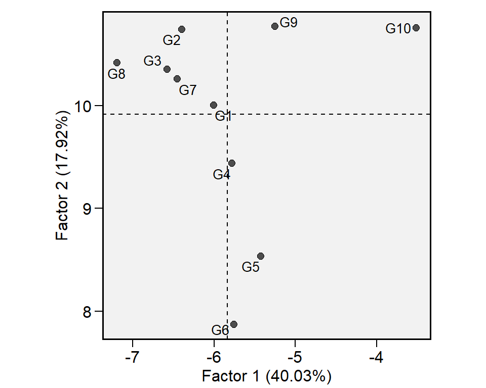
# A tibble: 14 x 4
PCA Eigenvalues Variance Cumul_var
<fct> <dbl> <dbl> <dbl>
1 PC1 5.60e+ 0 4.00e+ 1 40.0
2 PC2 2.51e+ 0 1.79e+ 1 58.0
3 PC3 2.41e+ 0 1.72e+ 1 75.1
4 PC4 1.37e+ 0 9.80e+ 0 84.9
5 PC5 1.13e+ 0 8.05e+ 0 93.0
6 PC6 4.87e- 1 3.48e+ 0 96.5
7 PC7 3.03e- 1 2.16e+ 0 98.6
8 PC8 1.29e- 1 9.25e- 1 99.6
9 PC9 6.24e- 2 4.46e- 1 100
10 PC10 1.72e-16 1.23e-15 100
11 PC11 1.41e-16 1.01e-15 100
12 PC12 -1.74e-16 -1.25e-15 100
13 PC13 -2.67e-16 -1.91e-15 100
14 PC14 -3.01e-16 -2.15e-15 100 # A tibble: 14 x 8
Env FA1 FA2 FA3 FA4 FA5 Communality Uniquenesses
<fct> <dbl> <dbl> <dbl> <dbl> <dbl> <dbl> <dbl>
1 E1 -0.881 0.327 0.00927 -0.0631 0.274 0.963 0.0369
2 E10 -0.942 -0.158 -0.0820 0.113 0.174 0.962 0.0380
3 E11 -0.929 -0.233 -0.0336 -0.242 0.110 0.989 0.0111
4 E12 -0.848 0.135 0.0263 0.0941 0.241 0.805 0.195
5 E13 -0.940 0.108 -0.0842 -0.0637 -0.235 0.961 0.0391
6 E14 -0.150 -0.123 -0.916 -0.0872 0.265 0.954 0.0463
7 E2 -0.198 -0.0521 -0.126 -0.969 0.0328 0.997 0.00266
8 E3 -0.0806 0.910 0.341 -0.0173 -0.110 0.963 0.0370
9 E4 0.209 0.543 -0.272 -0.728 -0.120 0.957 0.0433
10 E5 -0.777 0.392 -0.269 -0.0470 -0.267 0.904 0.0963
11 E6 -0.524 0.569 -0.309 -0.174 -0.238 0.781 0.219
12 E7 -0.244 0.342 -0.520 0.297 0.619 0.918 0.0820
13 E8 0.00161 -0.0589 -0.914 -0.226 -0.143 0.911 0.0891
14 E9 -0.0794 -0.291 -0.0183 -0.0539 0.927 0.954 0.0463 # A tibble: 14 x 6
Env Factor Mean Min Max CV
<fct> <fct> <dbl> <dbl> <dbl> <dbl>
1 E1 FA1 2.52 1.97 2.90 13.3
2 E10 FA1 2.18 1.54 2.57 14.4
3 E11 FA1 1.37 0.899 1.68 16.4
4 E12 FA1 1.61 1.02 2 20.3
5 E13 FA1 2.91 1.83 3.52 16.8
6 E5 FA1 3.91 3.37 4.81 10.7
7 E3 FA2 4.06 3.43 4.57 8.22
8 E6 FA2 2.66 2.34 2.98 7.95
9 E14 FA3 1.78 1.43 2.06 11.7
10 E8 FA3 2.54 2.05 2.88 10.5
11 E2 FA4 3.18 2.61 3.61 8.25
12 E4 FA4 3.68 3.02 4.27 11.5
13 E7 FA5 1.99 1.39 2.55 16.8
14 E9 FA5 3.06 1.94 3.72 15.6 A maneira mais fácil de calcular os índices de estabilidade acima mencionados é usando a função ge_stats().
Se você deseja exportar um resumo dos resultados, a maneira mais simples é usando função summary().
Este comando criará um arquivo de texto chamado ge_stats summary.txt no diretório de trabalho atual.
14.7 O modelo AMMI
O modelo linear mais simples com efeito de interação usado na análise de EMA é
\[ {y_{ijk}} = {\rm{ }}\mu {\rm{ }} + \mathop \alpha \nolimits_i + \mathop \tau \nolimits_j + \mathop {(\alpha \tau )}\nolimits_{ij} + \mathop \gamma \nolimits_{jk} + {\rm{ }}\mathop \varepsilon \nolimits_{ijk} \]
onde \({y_{ijk}}\) é a variável resposta observada no k-ésimo bloco do i-ésimo genótipo no j-ésimo ambiente (i = 1, 2, …, g; j = 1, 2, …, e; k = 1, 2, …, b); \(\mu\) é a média geral; \(\mathop\alpha\nolimits_i\) é o efeito principal do genótipo i; \(\mathop \tau \nolimits_j\) é o principal efeito do ambiente j; \(\mathop {(\alpha \tau )}\nolimits_{ij}\) é o efeito de interação do genótipo i com o ambiente j; \(\mathop \gamma \nolimits_{jk}\) é o efeito do bloco k no ambiente j; e \({\rm{ }}\mathop \varepsilon \nolimits_{ijk}\) é o erro aleatório assumindo \(i.i.d \sim N(0, \sigma^2 )\).
Métodos que combinam diferentes princípios estatísticos ganharam espaço na análise de por volta da década 1960, com destaque especial ao estudo de Gollob (1968), que propôs um método que combina os benefícios da análise de fatores e análise de variância em um único método para estudar a estabilidade . Naquela época este método era conhecido como FANOVA. Atualmente este mesmo método foi popularizado por Gauch (1988) com o acrônimo AMMI.
A análise AMMI utiliza análise aditiva de variância aos fatores principais (genótipo e ambiente) e decomposição por valores singulares ao residual do modelo aditivo, isto é, o efeito da interação genótipo-vs-ambiente somado ao erro experimental. Esta matriz dos efeitos não aditivos, então, pode ser aproximadamente exibida por meio de biplots Gabriel (1971). Este método tem ganhado destaque nas últimas décadas, principalmente devido a rápida evolução computacional, o que tornou possível as complexas decomposições de matrizes de alta ordem.
De posse de uma matriz de dupla entrada oriunda de ensaios multiambientes, a estimativa da variável resposta do i-ésimo genótipo no j-ésimo ambiente é obtida utilizando AMMI de acordo com o seguinte modelo:
\[ {y_{ij}} = \mu + {\alpha_i} + {\tau_j} + \sum\limits_{k = 1}^k {{\lambda _k}{a_{ik}}} {t_{jk}} + {\rho _{ij}} + {\varepsilon _{ij}} \]
onde \({\lambda_k}\) é o valor singular para o k-ésimo eixo do componente principal; \(a_{ik}\) é o i-ésimo elemento do k-ésimo autovetor de genótipos; \(t_{jk}\) é o j-ésimo elemento do k-ésimo autovetor de ambientes. Um resíduo \(\rho _{ij}\) permanece, se todos os k-PCAs não são considerados, onde k = \(min(G-1; E-1)\).
14.7.1 Ajuste do modelo
O modelo AMMI é ajustado com a função performs_ammi(). O primeiro argumento é os dados, no nosso exemplo data_ge. Os próximos argumentos (ENV, GEN e REP) são os nomes das colunas que contém os níveis dos fatores ambiente, genótipo, repetição, respectivamente. No argumento resp são declaradas as variáveis resposta. Uma única variável pode ser analizada (como em nosso exemplo) ou, um vetor de variáveis, usando, por exemplo resp = c(GY, HM).
variable GY
---------------------------------------------------------------------------
AMMI analysis table
---------------------------------------------------------------------------
Source Df Sum Sq Mean Sq F value Pr(>F) Percent Accumul
ENV 13 279.574 21.5057 62.33 0.00e+00 . .
REP(ENV) 28 9.662 0.3451 3.57 3.59e-08 . .
GEN 9 12.995 1.4439 14.93 2.19e-19 . .
GEN:ENV 117 31.220 0.2668 2.76 1.01e-11 . .
PC1 21 10.749 0.5119 5.29 0.00e+00 34.4 34.4
PC2 19 9.924 0.5223 5.40 0.00e+00 31.8 66.2
PC3 17 4.039 0.2376 2.46 1.40e-03 12.9 79.2
PC4 15 3.074 0.2049 2.12 9.60e-03 9.8 89
PC5 13 1.446 0.1113 1.15 3.18e-01 4.6 93.6
PC6 11 0.932 0.0848 0.88 5.61e-01 3 96.6
PC7 9 0.567 0.0630 0.65 7.53e-01 1.8 98.4
PC8 7 0.362 0.0518 0.54 8.04e-01 1.2 99.6
PC9 5 0.126 0.0252 0.26 9.34e-01 0.4 100
Residuals 252 24.367 0.0967 NA NA . .
Total 419 357.816 0.8540 NA NA <NA> <NA>
---------------------------------------------------------------------------
All variables with significant (p < 0.05) genotype-vs-environment interaction
Done!Note que os argumentos inseridos na função obedecem a ordem dos argumentos requiridos na função [veja args(waas)]. Se obedecida esta ordem de avaliação, não é necessário declarar qual argumento está sendo inserido. Por exemplo, se mudássemos a ordem de entrada, teríamos um código semelhante a waas(data_ge, gen = GEN, env = ENV, REP, resp = c(PH, ED, TKW, NKR)).
14.7.2 Analise residual
O pacote metan conta com uma opção para análise residual do modelo AMMI ajustado. Gráficos podem ser obtidos utilizando o seguinte comando.
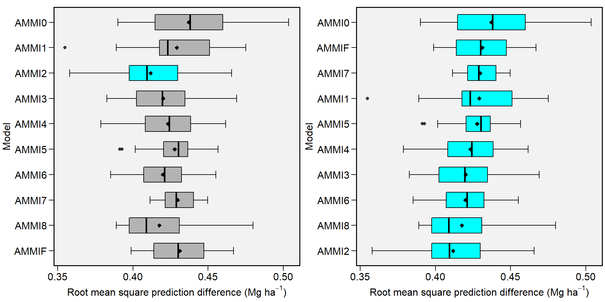
A figura acima, obtida com a função autoplot(), mostra 4 gráficos. Os dois primeiros são os mais importantes. O primeiro (Residual vs fitted) pode ser utilizado para identificar a homogeneidade das variâncias. Uma distribuição aleatória dos pontos no gráfico deve ser observada. Quando um padrão de distibuição é observado –como, por exemplo, a distribuição dos pontos em forma de funil– uma investigação deve ser realizada, pois este padrão indica a possiblidade de heterogeneidade das variâncias. O segundo gráfico (Normal Q-Q) nos informa quanto a normalidade dos resíduos, ou seja, é desejado que os pontos sejam distribuídos ao redor da linha diagonal.
14.7.3 Escolha do número de termos multiplicativos
Conforme já discutido, a análise AMMI aplica a técnica de decomposição por valores singulares na matriz dos efeitos não aditivos do modelo (A). Logo, esta matriz pode ser aproximada pela pelo seguinte modelo: \(A = U \lambda V^T\), onde onde U é uma matriz g \(\times\) e contendo os vetores singulares de \(AA^T\) e formam a base ortonormal para os efeitos de genótipos; \(V^T\) é uma matriz e \(\times\) e que contém os vetores singulares de \(\mathbf{A^TA}\) e formam a base ortonormal para os efeitos de ambientes; e \(\lambda\) é uma matriz diagonal e \(\times\) e contendo k-valores singulares de \(A^TA\) , onde k = \(min(G-1; E-1)\). Assim, diferentes modelos (dependendo do número de termos multiplicativos utilizados) podem ser utilziados para predizer o rendimento do genótipo i no ambiente j. A tabela abaixo mostra os possíveis modelos. No modelo AMMI0 apenas os efeitos aditivos são considerados. No modelo AMMI1, o primeiro termo multiplicativo é considerado, e assim por diante, até o modelo AMMIF, onde \(min(G-1;E-1)\) termos são considerados.
| Família AMMI | Resposta esperado do genótipo i no ambiente j |
|---|---|
| AMMI0 | \(\hat{y}_{ij} = \bar{y}_{i.} + \bar{y}_{.j} - \bar{y}_{..}\) |
| AMMI1 | \(\hat{y}_{ij} = \bar{y}_{i.} + \bar{y}_{.j} - \bar{y}_{..} +\lambda_1 a_{i1}t_{j1}\) |
| AMMI2 | \(\hat{y}_{ij} = \bar{y}_{i.} + \bar{y}_{.j} - \bar{y}_{..} +\lambda_1 a_{i1}t_{j1}+\lambda_2 a_{i2}t_{j2}\) |
| … | |
| AMMIF | \(\hat{y}_{ij} = \bar{y}_{i.} + \bar{y}_{.j} - \bar{y}_{..} +\lambda_1 a_{i1}t_{j1}+\lambda_2 a_{i2}t_{j2}+...+\lambda_p a_{ip}t_{jp}\) |
A escolha do número de termos multiplicativos a ser utilizado é baseada em basicamente dois critérios de sucesso de análise: Postdiscritive sucess e Predictive sucess. Por definição, Predictive sucess significa literalmente a afirmação prévia do que acontecerá em algum momento futuro. Neste contexto, testes de validação cruzada (cross-validation) podem ser utilizadas para avaliar o sucesso preditivo dos membros de modelos da familia AMMI (T. Olivoto, Lúcio, Da silva, Marchioro, et al. 2019). Por outro lado, Postdiscritive sucess significa fazer uma afirmação ou dedução sobre algo que aconteceu no passado. Na escolha do número de termos multiplicativos da análise AMMI este sucesso pode ser calculado utilizando testes como o proposto por Gollob (1968).
14.7.3.1 Postdiscritive sucess
No objeto anova gerado pela função waas() testes de hipóteses são realizados e probabilidades de erro são atribuídas para cada modelo considerando a distribuição de graus de liberdade proposto por Gollob (1968). Assim é possível identificar qual é o número ideal de termos a ser considerado na predição. Em nosso exemplo, dois termos foram significativos a 5% de probabilidade de erro.
14.7.3.2 Predictive sucess
O pacote metan fornece uma solução completa para validaçao cruzada do modelo AMMI. Utilizando a função cv_ammif() , por exemplo, é possível realizar um teste de cross-validation para a família de modelos AMMI (AMMI0-AMMIF) usando dados com repetições. Automaticamente, a primeira validação é realizada considerando a AMMIF (todos possíveis IPCAs são usados). Considerando esse modelo, o conjunto de dados original é dividido em dois conjuntos de dados: dados de modelagem e dados de validação. O conjunto de dados “modelagem” possui todas as combinações (genótipo vs ambiente) com R-1 repetições. O conjunto de dados “validação” tem uma repetição. O diagrama abaixo representa o procedimento realizado.
A divisão do conjunto de dados em dados de modelagem e validação depende do design informado. Considerando um delineamento de blocos completos casualizados (DBC), blocos completos são aleatoriamente selecionados dentro de ambientes, como mostrado por T. Olivoto, Lúcio, Da silva, Marchioro, et al. (2019). O bloco restante serve dados de validação. Se design = "CRD" for informado, assim declarando que um delineamento intericamente casualizado (DIC) foi usado, observações são aleatoriamente selecionadas para cada tratamento (combinação genótipo-vs-ambiente). Este é o mesmo procedimento sugerido por Gauch (1988). Os valores estimados para o membro da família AMMI em estudo são então comparados com os dados de “validação” e um erro de predição \(\hat{z}_{ij}\) é estimado para cada tratamento. A raiz quadrada do quadrado médio da diferença de predição (RMSPD) é calculado. Este procedimento é repetido n vezes, utilizando o argumento nboot = n. Ao final do procedimento, o algorítimo armazena as n estimativas do RMSPD para o modelo em questão, e um novo modelo é então testado seguindo os mesmos passos.
Como exemplo, a função cv_ammi() é usada para calcular um procedimento de validação cruzada para os modelos AMMI0, AMMI2 e AMMIF (9 eixos).
AMMI0 <- cv_ammi(data_ge, ENV, GEN, REP, GY, naxis = 0) # AMMI0
AMMI2 <- cv_ammi(data_ge, ENV, GEN, REP, GY, naxis = 2) # AMMI2
AMMI9 <- cv_ammi(data_ge, ENV, GEN, REP, GY, naxis = 9) # AMMIF- AMMI0 para AMMIF
A função
cv_ammif()é usada para calcular um procedimento de validação cruzada para todos os membros do modelo da família AMMI. Nesse caso, AMMI0-AMMI9.
Validação cruzada para previsão de BLUP A função
cv_blup ()fornece uma validação cruzada de dados baseados em replicação usando modelos mistos. Por padrão, blocos completos são selecionados aleatoriamente para cada ambiente. Usando o argumento `random ’, é possível escolher os efeitos aleatórios do modelo, como mostrado abaixo.Genótipo e genótipo versus ambiente como efeitos aleatórios
- Ambiente, replicação dentro do ambiente e interação como efeitos aleatórios
- Um modelo aleatório (todos os termos como efeitos aleatórios)
14.8 Imprimindo os meios das estimativas RMSPD
# A tibble: 11 x 6
MODEL mean sd se Q2.5 Q97.5
<fct> <dbl> <dbl> <dbl> <dbl> <dbl>
1 BLUP_g_RCBD 0.405 0.0249 0.00176 0.357 0.453
2 AMMI2 0.411 0.0242 0.00171 0.369 0.460
3 AMMI4 0.416 0.0234 0.00166 0.373 0.462
4 AMMI3 0.416 0.0215 0.00152 0.377 0.457
5 AMMI5 0.422 0.0232 0.00164 0.377 0.464
6 AMMI6 0.422 0.0219 0.00155 0.381 0.462
7 AMMI7 0.425 0.0199 0.00141 0.381 0.458
8 AMMI8 0.427 0.0204 0.00145 0.387 0.462
9 AMMIF 0.429 0.0213 0.00150 0.390 0.469
10 AMMI1 0.430 0.0251 0.00178 0.384 0.479
11 AMMI0 0.430 0.0283 0.00200 0.370 0.485A tabela acima mostra as estatísticas descritivas (média, desvio padrão, erro padrão da média e quantis 2,5% e 97,5%) das 100 estimativas RMSPD para cada modelo, e são apresentadas a partir do modelo mais preciso (menor média RMSPD) para o modelo menos preciso (maior média RMSPD).
14.9 Plotagem dos valores RMSPD
Os valores das estimativas RMSPD obtidas no processo de validação cruzada podem ser plotados usando a função plot ().
bind1 <- bind_cv (AMMI0, AMMI2, AMMI9)
bind2 <- bind_cv (AMMIF, BLUP_g, BLUP_e, BLUP_ge)
a <- plot(bind1, violino = TRUE)
b <- plot(bind2,
width.boxplot = 0.6,
order_box = TRUE,
plot_theme = theme_metan_minimal ())
arrange_ggplot(a, b, labels = letters[1:2])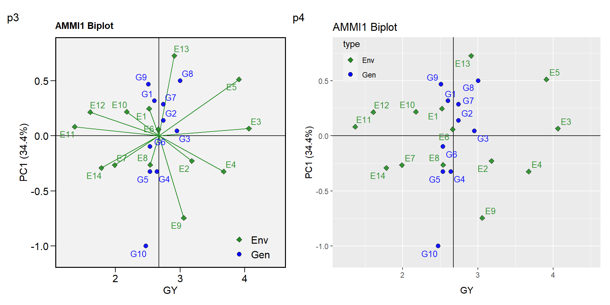
Seis estatísticas são mostradas neste boxplot. A média (losango preto), a mediana (linha preta), as dobradiças inferior e superior que correspondem ao primeiro e terceiro quartis (percentis 25 e 75, respectivamente). O bigode superior se estende da dobradiça até o maior valor não mais que \(1,5 \times {IQR}\) a partir da dobradiça (em que IQR é o intervalo entre quartis). O bigode mais baixo se estende da dobradiça ao menor valor, no máximo \(1,5 \times {IQR}\) da dobradiça. Dados além do final dos bigodes são considerados pontos extremos. Se a condição violin = TRUE, uma plotagem de violino é adicionada junto com o boxplot. Um gráfico de violino é uma exibição compacta de uma distribuição contínua exibida da mesma maneira que um gráfico de caixa.
14.9.1 Valores estimados pelo modelo AMMI
Em nosso exemplo, o modelo AMMI2 foi o que apresentou o menor RMSPD, sendo então o mais indicado para estimar a variável GY. A estimativa considerando dois termos multiplicativos pode realizada utilizando a função predict(), tendo como argumentos o modelo AMMI ajustado (AMMI_model) e o número de termos multiplicativos considerados na estimação (naxis).
# A tibble: 140 x 8
ENV GEN Y resOLS Ypred ResAMMI[,1] YpredAMMI[,1] AMMI0
<fct> <fct> <dbl> <dbl> <dbl> <dbl> <dbl> <dbl>
1 E1 G1 2.37 -0.0843 2.45 0.0693 2.52 2.45
2 E1 G10 1.97 -0.344 2.32 -0.360 1.96 2.32
3 E1 G2 2.90 0.311 2.59 0.0735 2.66 2.59
4 E1 G3 2.89 0.0868 2.80 -0.00963 2.79 2.80
5 E1 G4 2.59 0.100 2.49 0.0144 2.50 2.49
6 E1 G5 2.19 -0.196 2.38 -0.0317 2.35 2.38
7 E1 G6 2.30 -0.0797 2.38 0.0238 2.40 2.38
8 E1 G7 2.77 0.186 2.59 0.186 2.77 2.59
9 E1 G8 2.90 0.0493 2.85 0.0852 2.94 2.85
10 E1 G9 2.33 -0.0307 2.36 -0.0515 2.31 2.36
# ... with 130 more rowsAs seguintes variáveis são retornadas: ENV é o ambiente; GEN é o genótipo; Y é o valor observado; resOLS é o residual (\(\hat{z}_{ij}\)) estimado pelos Mínimos Quadrados Ordinários, onde \(\hat{z}_{ij} = y_{ij} - \bar{y}_{i.} - \bar{y}_{.j} + \bar{y}_{..}\); Ypred é o valor estimado pelos mínimos quadrados ordinários (\(\hat{y}_{ij} = y_{ij} -\hat{z}_{ij}\)); ResAMMI é o residual estimado pelo modelo AMMI (\(\hat{a}_{ij}\)) considerando o número de termos multiplicativos informado na função (neste caso 2), onde \(\hat{a}_{ij} = \lambda_1a_{i1}t_{j1}\); YpredAMMI é o valor estimado pelo modelo AMMI \(\hat{ya}_{ij} = \bar{y}_{i.} + \bar{y}_{.j} - \bar{y}_{..}+\hat{a}_{ij}\); e AMMI0 é o valor estimado quando nenhum termo multiplicativo é usado, ou seja, \(\hat{y}_{ij} = \bar{y}_{i.} + \bar{y}_{.j} - \bar{y}_{..}\).
14.9.2 Índices de estabilidade baseados em AMMI
(T. Olivoto, Lúcio, Da silva, Marchioro, et al. 2019) demonstraram que a média ponderada dos escores absolutos (WAAS, Weighted Average of Absolute Scores), pode ser utilizada como um índice quantitativo de estabilidade na análise AMMI. Utilizando a função get_model_data() é possível obter facilmente este índice para diversas variáveis com poucas linhas de código. Veja o exemplo abaixo, com quatro variáveis. Este índice também é computado em uma estrutura de modelo misto. Veja o exemplo aqui.
variable PH
---------------------------------------------------------------------------
AMMI analysis table
---------------------------------------------------------------------------
Source Df Sum Sq Mean Sq F value Pr(>F) Percent Accumul
ENV 3 7.719 2.5728 127.913 4.25e-07 . .
REP(ENV) 8 0.161 0.0201 0.897 5.22e-01 . .
GEN 12 1.865 0.1554 6.929 6.89e-09 . .
GEN:ENV 36 5.397 0.1499 6.686 5.01e-14 . .
PC1 14 4.466 0.3190 14.230 0.00e+00 82.8 82.8
PC2 12 0.653 0.0545 2.430 8.40e-03 12.1 94.9
PC3 10 0.277 0.0277 1.240 2.76e-01 5.1 100
Residuals 96 2.153 0.0224 NA NA . .
Total 155 17.294 0.1116 NA NA <NA> <NA>
---------------------------------------------------------------------------
variable ED
---------------------------------------------------------------------------
AMMI analysis table
---------------------------------------------------------------------------
Source Df Sum Sq Mean Sq F value Pr(>F) Percent Accumul
ENV 3 306.0 101.99 43.386 2.70e-05 . .
REP(ENV) 8 18.8 2.35 0.906 5.15e-01 . .
GEN 12 212.9 17.74 6.838 8.95e-09 . .
GEN:ENV 36 398.2 11.06 4.263 7.60e-09 . .
PC1 14 212.2 15.16 5.840 0.00e+00 53.3 53.3
PC2 12 134.7 11.23 4.330 0.00e+00 33.8 87.1
PC3 10 51.3 5.13 1.980 4.38e-02 12.9 100
Residuals 96 249.1 2.59 NA NA . .
Total 155 1185.0 7.64 NA NA <NA> <NA>
---------------------------------------------------------------------------
variable TKW
---------------------------------------------------------------------------
AMMI analysis table
---------------------------------------------------------------------------
Source Df Sum Sq Mean Sq F value Pr(>F) Percent Accumul
ENV 3 37013 12338 11.13 3.16e-03 . .
REP(ENV) 8 8869 1109 1.21 3.03e-01 . .
GEN 12 44633 3719 4.05 4.41e-05 . .
GEN:ENV 36 164572 4571 4.98 1.73e-10 . .
PC1 14 104276 7448 8.11 0.00e+00 63.4 63.4
PC2 12 33361 2780 3.03 1.20e-03 20.3 83.6
PC3 10 26935 2694 2.93 3.00e-03 16.4 100
Residuals 96 88171 918 NA NA . .
Total 155 343257 2215 NA NA <NA> <NA>
---------------------------------------------------------------------------
variable NKR
---------------------------------------------------------------------------
AMMI analysis table
---------------------------------------------------------------------------
Source Df Sum Sq Mean Sq F value Pr(>F) Percent Accumul
ENV 3 237.0 79.01 15.843 0.000997 . .
REP(ENV) 8 39.9 4.99 0.635 0.746348 . .
GEN 12 227.8 18.99 2.418 0.008726 . .
GEN:ENV 36 602.7 16.74 2.132 0.001839 . .
PC1 14 337.4 24.10 3.070 0.000600 56 56
PC2 12 192.2 16.02 2.040 0.028500 31.9 87.9
PC3 10 73.1 7.31 0.930 0.509500 12.1 100
Residuals 96 753.7 7.85 NA NA . .
Total 155 1861.1 12.01 NA NA <NA> <NA>
---------------------------------------------------------------------------
All variables with significant (p < 0.05) genotype-vs-environment interaction
Done!Class of the model: waasVariable extracted: WAAS# A tibble: 13 x 5
gen PH ED TKW NKR
<fct> <dbl> <dbl> <dbl> <dbl>
1 H1 0.318 0.667 2.72 0.929
2 H10 0.230 0.973 2.15 0.506
3 H11 0.201 0.649 1.26 0.836
4 H12 0.364 0.315 0.558 0.228
5 H13 0.363 0.838 0.514 0.946
6 H2 0.342 1.08 4.41 0.404
7 H3 0.374 0.486 4.10 0.252
8 H4 0.294 0.378 3.07 0.281
9 H5 0.168 0.567 0.738 0.611
10 H6 0.270 0.409 1.64 1.60
11 H7 0.228 0.384 3.44 0.518
12 H8 0.315 0.653 4.91 0.941
13 H9 0.146 0.907 5.50 0.888Além do índice WAAS mostrado acima, os seguintes índices de estabilidade baseados em AMMI podem ser calculados usando a função AMMI_indexes():
- AMMI stability value, ASV, (Purchase, Hatting, and Deventer 2000).
\[ ASV = \sqrt {{{\left[ {\frac{{IPCA{1_{ss}}}}{{IPCA{2_{ss}}}} \times \left( {IPCA{1_{score}}} \right)} \right]}^2} + {{\left( {IPCA{2_{score}}} \right)}^2}} \]
- Soma dos valores absolutos dos escores IPCA, SIPC
\[ SIP{C_i} = \sum\nolimits_{k = 1}^P {\left| {\mathop {\lambda }\nolimits_k^{0.5} {a_{ik}}} \right|} \]
- Média dos autovetores elevados ao quadrado, EV
\[ E{V_i} = \sum\nolimits_{k = 1}^P {\mathop a\nolimits_{ik}^2 } /P \]
descritos por Sneller, Kilgore-Norquest, and Dombek (1997), onde P é o número de IPCA retido por meio de testes F
- valor absoluto da contribuição relativa dos IPCAs para a interação (Zali et al. 2012).
\[ Z{a_i} = \sum\nolimits_{k = 1}^P {{\theta _k}{a_{ik}}} \]
Onde \({\theta _k}\) é o percentual da soma de quadrados explicada pelo k -ésimo IPCA. índices de selecção simultâneas (SSI) são calculados pela soma dos ranques dos índices Za ASV, SIPC e EV e o ranque da variável dependente (Farshadfar 2008) que resulta em ssiASV, ssiSIPC, ssiEV, e ssiZa, respectivamente.
A função AMMI_index () tem dois argumentos. O primeiro (x) é o modelo, que deve ser um objeto da classe waas. O segundo, (order.y) é a ordem para a variável resposta. Por padrão, ele é definido como nulo, o que significa que a variável resposta é ordenada em ordem decrescente. Se x é uma lista com mais de uma variável, então order.y deve ser um vetor com o mesmo comprimento de x. Cada elemento do vetor deve ser um dos “h” ou “l”. Se “h” for usado, a variável resposta será ordenada em ordem decrescente. Se “l” for usado, a variável resposta será ordenada em ordem crescente da média dos genótipos. Usando o operador %>% é possível estruturar uma sequência lógica de operações. Vamos construir esse modelo.
stab_indexes <-
data_ge %>%
waas(ENV, GEN, REP, GY, verbose = FALSE) %>%
AMMI_indexes()
print(stab_indexes)Variable GY
---------------------------------------------------------------------------
AMMI-based stability indexes
---------------------------------------------------------------------------
# A tibble: 10 x 7
GEN Y ASV SIPC EV ZA WAAS
<fct> <dbl> <dbl> <dbl> <dbl> <dbl> <dbl>
1 G1 2.60 0.346 0.463 0.0149 0.100 0.151
2 G10 2.47 1.23 2.07 0.210 0.437 0.652
3 G2 2.74 0.249 1.54 0.179 0.216 0.283
4 G3 2.96 0.113 0.552 0.0207 0.0797 0.106
5 G4 2.64 0.594 1.04 0.0521 0.219 0.326
6 G5 2.54 0.430 0.997 0.0433 0.186 0.270
7 G6 2.53 0.265 1.14 0.0911 0.172 0.233
8 G7 2.74 0.663 1.79 0.191 0.303 0.428
9 G8 3.00 0.574 1.18 0.0669 0.225 0.327
10 G9 2.51 0.983 1.50 0.131 0.336 0.50714.9.3 Biplots
O pacote metan conta com gráficos gerados pelo pacote ggplot2, o que lhe confere um alto nível de personalização. A função utilizada para obtenção dos diferentes tipos de biplots será a plot_scores(). Para maiores detalhes veja ?plot_._scores.
14.9.3.1 Biplot tipo 2: GY x PC1
O biplot conhecido como AMMI1 é confeccionado utilizando o argumento type = 2 na função plot_scores(). O biplot AMMI1 é utilizado para identificar tanto a estabilidade quando a produtividade dos genótipos. Neste tipo de biplot, os genótipos com escores do PC1 próximos de zero e à direita da linha vertical, são considerados os mais estáveis e com rendimento superior a média geral.
p3 <-plot_scores(AMMI_model)
p4 <-plot_scores(AMMI_model,
col.segm.env = "transparent") +
theme_gray() +
theme(legend.position = c(0.1, 0.9),
legend.background = element_rect(fill = NA))
arrange_ggplot(p3, p4, labels = c("p3","p4"))Figure 14.1: Biplot AMMI1 gerado pelo pacote metan
14.9.3.2 biplot tipo 1: IPCA1 x IPCA2
O biplot conhecido como AMMI2 é confeccionado utilizando o argumento type = 1 (padrão) na função plot_scores(). O biplot AMMI2 representa os dois primeiros IPCAs oriundos da decomposição por valor singular da matriz dos efeitos da interação e é utilizado para realizar inferências quanto aos padrões da interação genótipo vs ambiente. Neste caso, os dois primeiros IPCAs explicam 66.2% da da soma de quadrados da interação.
p1 <-plot_scores(AMMI_model, type = 2)
p2 <-plot_scores(AMMI_model,
type = 2,
polygon = TRUE,
col.gen = "black",
col.env = "gray70",
col.segm.env = "gray70",
axis.expand = 1.5)
arrange_ggplot(p1, p2, labels = c("p1","p2"))Figure 14.2: Biplot AMMI2, gerado pelo pacote metan
14.9.3.3 Rendimento nominal x IPCA1
Com o objetivo de identificar possíveis mega-ambientes, bem como visualizar o padrão which-won-where do conjunto de dados, um gráfico com o rendimento nominal (\(\mathop {\hat y} \nolimits_ {ij}^*\) ) em função dos escores PCA1 dos ambientes é também confecionado pela função plot_scores() utilizando o argumento type = 4. Neste gráfico, cada genótipo é representado por uma linha reta com a equação \(\hat y_{ij}^* = \mu_i + PCA1_i \times PCA1_j\) , onde \(\hat y_{ij}^*\) é o rendimento nominal para o genótipo i no ambiente J; \(\mu\) é a média geral do genótipo i; \(PC{1_i}\) é o escore PCA1 do genótipo i e \(PC{1_j}\) é o escore PCA1 do ambiente j. O genótipo vencedor em um determinado ambiente possui o maior rendimento nominal nesse ambiente.
plot_scores(AMMI_model,
type = 4,
size.tex.pa = 2,
x.lab = "Rendimento nominal (Mg/ha)",
y.lab = "Escore dos ambientes no PCA1")Figure 14.3: Gráfico do tipo ‘which-won-where’ baseado no modelo AMMI
14.10 O modelo GGE
O modelo GGE (Genotype plus Genotype-vs-Environment interaction) tem sido amplamente utilizado para avaliação de genótipos e identificação de mega-ambientes em ensaios multi-ambientais (MET). Este modelo considera um biplot que é construído pelos dois primeiros componentes principais (PC1 e PC2) derivados da decomposição por valores singulares de dados oriundos de um MET centrados no ambiente (Yan et al. 2007).
Comunmente, o rendimento médio do genótipo i no ambiente j é descrito pelo seguinte modelo linear geral, ignorando quaisquer erros aleatórios
\[ \hat y_{ij} + \mu + \alpha_i + \beta_j + \phi_{ij} \]
onde \(\hat y_{ij}\) é o rendimento médio do genótipo i no ambiente j, \(i = 1, ... g; j = 1, ... e\) sendo g e e o número de genótipos e ambientes, respectivamente; \(\mu\) é a média geral; \(\alpha_i\) é o efeito principal do genótipo i; \(\beta_j\) é o efeito principal do ambiente j e \(\phi_{ij}\) é o efeito de interação entre genótipo i e o ambiente j. Quando \(\phi_{ij}\) é submetido a Decomposição por Valor Singular (SVD), temos o bem conhecido modelo AMMI, visto anteriormente. No modelo GGE, o termo \(\alpha_i\) é deletado do modelo acima, permitindo que a variação explicada por este termo seja absorvida por \(\phi_{ij}\). Em seguida, esta matriz de dados –agora centrada no ambiente– é submetida a SVD (Yan et al. 2007; Yan and Kang 2003). Explicitamente, temos
\[ {\phi_{ij} = \hat y_{ij}} - \mu - \beta_j = \sum\limits_{k = 1}^p \xi_{ik}^*\eta_{jk}^* \]
onde \(\xi_{ik}^* = \lambda_k^ \alpha \xi_{ik}\); \(\eta_{jk}^* = \lambda_k^{1-\alpha}\eta_{jk}\) sendo \(\lambda_k\) o k-ésimo autovalor da SVD (\(k = 1, ... p\)), com \(p \le min (e, g)\); \(\alpha\) é o fator de partição do valor singular para o Componente Principal (PC) k (Yan 2002); \(\xi_{ik}^*\) e \(\eta_{jk}^*\) são os escores do PC k para genótipo i e ambiente j, respectivamente.
A função gge() do pacote metan é usada para ajustar o modelo GGE. De acordo com Yan and Kang (2003), a função suporta quatro métodos de centralização de dados, dois métodos de escalonamento de dados e três opções para particionamento de valor singular:
14.10.1 Data centering
- 0 ou
none: para dados não centralizados; - 1 ou
global: para dados centralizados globalmente (E + G + GE); - 2 ou
environment: (padrão), para dados centrados no ambiente (G + GE); - 3 ou
double: para dados centrados duplamente (GE). Um biplot não pode ser produzido sem modelos produzidos sem centralização.
14.10.2 Data scaling
- 0 ou
none: (padrão) para nenhum escalonamento; - 1 ou
sd: Cada valor é dividido pelo desvio padrão do seu ambiente correspondente (coluna). Isso colocará todos os ambientes com aproximadamente o mesmo intervalo de valores.
14.10.3 Singular value partition
- 1 ou
genotype: O valor singular é inteiramente particionado nos autovetores de Genótipo (\(\alpha = 1\)), Também chamado de row metric preserving; - 2 ou
environment: (padrão) O valor singular é inteiramente particionado nos autovetores de ambiente (\(\alpha = 0\)), também chamado de column metric preserving; - 3 ou
symmetrical: O valor singular é simetricamente dividida nos autovetores de genótipo e ambiente (\(\alpha = 0,5\)). Esta partição é mais frequentemente usada na análise AMMI.
14.10.4 Ajustando o modelo GGE
Para ajustar o modelo GGE, usaremos os dados em data_ge, que contém dados do rendimento de grãos avaliados em 10 genótipos conduzidos em 14 ambientes. Primeiro de tudo, vamos criar uma tabela bidirecional para esses dados usando a função make_mat().
E1 E10 E11 E12 E13 E14 E2 E3 E4 E5 E6 E7 E8 E9
G1 2.37 2.31 1.356 1.34 3.00 1.53 3.04 4.08 3.49 4.17 2.81 1.90 2.27 2.78
G10 1.97 1.54 0.899 1.02 1.83 1.86 3.15 4.11 4.27 3.37 2.48 2.24 2.70 3.15
G2 2.90 2.30 1.491 1.99 3.03 1.43 3.23 4.57 3.72 3.83 2.54 1.99 2.05 3.36
G3 2.89 2.34 1.568 1.76 3.47 2.06 3.61 4.13 4.13 4.13 2.98 2.16 2.85 3.29
G4 2.59 2.17 1.370 1.53 2.64 1.86 3.19 3.85 3.30 3.78 2.70 1.98 2.30 3.72
G5 2.19 2.14 1.326 1.69 2.57 1.78 3.14 3.74 3.38 3.47 2.43 1.66 2.71 3.30
G6 2.30 2.21 1.501 1.39 2.91 1.80 3.29 3.43 3.40 3.57 2.34 1.76 2.54 3.04
G7 2.77 2.44 1.364 1.95 3.18 1.94 2.61 4.10 3.02 4.05 2.67 2.55 2.58 3.14
G8 2.90 2.57 1.683 2.00 3.52 1.99 3.44 4.11 4.14 4.81 2.91 2.26 2.88 2.83
G9 2.33 1.74 1.125 1.41 2.95 1.57 3.09 4.51 3.90 3.93 2.77 1.39 2.49 1.94A função gge() ajusta um modelo GGE baseado em uma tabela bidirecional (ge_table em nosso caso) com genótipos nas linhas e ambientes em colunas, ou em um data.frame contendo pelo menos as colunas para genótipos, ambientes e variável(is) resposta.
O modelo acima foi ajustado considerando (i) column metric preserving (onde o valor singular é inteiramente particionado nos autovetores do ambiente); (ii) environment centered (o biplot conterá uma informação mista de G + GEI); e nenhum método de escalonamento. Para alterar estas configurações padrão, use os argumentos svp, centering e scaling, respectivamente. Por favor, note que no segundo exemplo o argumento table foi definido como TRUE para indicar que os dados de entrada são uma tabela bidirecional.
14.10.5 Valores estimados pelo modelo GGE
# A tibble: 10 x 14
E1 E10 E11 E12 E13 E14 E2 E3 E4 E5 E6 E7 E8
* <dbl> <dbl> <dbl> <dbl> <dbl> <dbl> <dbl> <dbl> <dbl> <dbl> <dbl> <dbl> <dbl>
1 2.51 2.14 1.35 1.59 2.95 1.76 3.20 4.14 3.78 3.97 2.70 1.95 2.56
2 1.93 1.62 0.988 1.07 2.07 1.66 3.08 3.99 3.78 3.28 2.43 1.69 2.48
3 2.67 2.33 1.47 1.75 3.09 1.82 3.19 4.04 3.59 4.03 2.70 2.08 2.54
4 2.83 2.44 1.56 1.88 3.40 1.83 3.26 4.18 3.73 4.32 2.83 2.10 2.59
5 2.50 2.25 1.39 1.64 2.71 1.83 3.09 3.81 3.32 3.65 2.52 2.11 2.47
6 2.32 2.06 1.27 1.46 2.52 1.78 3.09 3.87 3.46 3.54 2.49 1.99 2.47
7 2.40 2.11 1.31 1.52 2.65 1.78 3.12 3.92 3.52 3.66 2.54 2.00 2.49
8 2.78 2.49 1.56 1.88 3.17 1.87 3.17 3.93 3.40 4.04 2.68 2.21 2.52
9 2.99 2.54 1.64 2.00 3.71 1.84 3.33 4.33 3.89 4.61 2.96 2.11 2.64
10 2.27 1.78 1.15 1.30 2.82 1.64 3.28 4.43 4.28 4.03 2.79 1.65 2.62
# ... with 1 more variable: E9 <dbl>14.10.6 Visualizando o Biplot
A função genérica plot() é usada para gerar um biplot usando como entrada o modelo ajustado da classe gge. O tipo de biplot é escolhido pelo argumento type na função. Dez tipos de biplots estão disponíveis de acordo com Yan and Kang (2003).
type = 1Um biplot básico.type = 2Desempenho médio vs. estabilidadetype = 3Que ganhou onde.type = 4Descriminação vs. representatividadetype = 5Examinar um ambiente.type = 6Ranquear os ambientes.type = 7Examinar um genótipo.type = 8Ranquear os genótipos.type = 9Comparar dois genótipos.type = 10Relação entre os ambientes.
Neste material, para cada tipo de biplot, dois gráficos são produzidos. Um com as configurações padrão e outro para mostrar algumas opções gráficas da função.
14.10.6.1 Biplot tipo 1: Um biplot básico
Esta é a configuração padrão no gráfico da função, portanto, este biplot é produzido apenas chamando plot(model), como mostrado abaixo.
p1 <- plot(gge_model)
p2 <- plot(gge_model,
col.gen = "blue",
size.text.env = 2)
arrange_ggplot(p1, p2)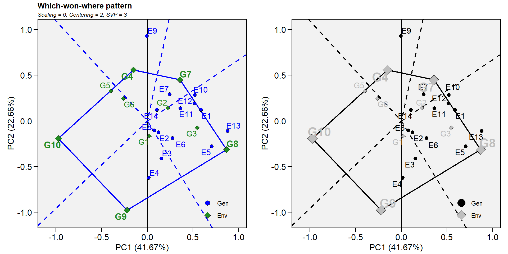
14.10.6.2 Biplot tipo 2: Desempenho médio vs. estabilidade
Neste biplot, a visualização da média e da estabilidade dos genótipos é obtida desenhando uma coordenada média de ambiente (AEC) no biplot obtido com row metric preserving. Primeiro, um ambiente médio, representado pelo pequeno círculo, é definido pelas médias dos escores PC1 e PC2 dos ambientes. A linha que passa pela origem do biplot e pelo AEC pode ser chamada de média. As projeções de marcadores genotípicos nesse eixo deve, portanto, aproximar o rendimento médio dos genótipos. Assim, o G8 foi claramente o genótipo de maior rendimento, em média.
A ordenada de AEC é a linha que passa pela origem do biplot e é perpendicular à abscissa do AEC. Portanto, se a abscissa AEC representa o G, a ordenada AEC deve aproximar o GEI associado a cada genótipo, que é uma medida de variabilidade ou instabilidade dos genótipos (Yan et al. 2007). Uma projeção maior na ordenada AEC, independentemente da direção, significa maior instabilidade. Em nosso exemplo, o G3 foi o mais estável e o segundo genótipo mais produtivo, enquanto o G9 apresentou alta instabilidade.
gge_model <-gge(data_ge, ENV, GEN, GY, svp = "genotype")
p1 <-plot(gge_model, type = 2)
p2 <-plot(gge_model,
type = 2,
col.gen = "black",
col.env = "gray",
axis_expand = 1.5)
arrange_ggplot(p1, p2)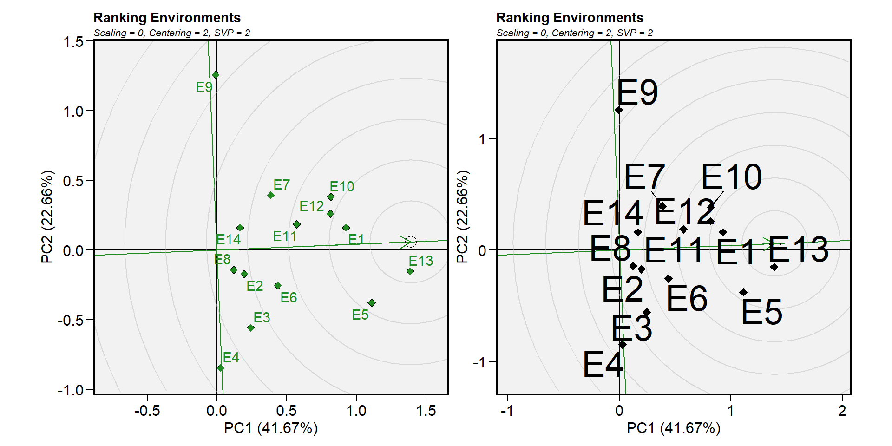
14.10.6.3 Biplot tipo 3: quem ganhou onde
Neste biplot (obtido com particionamento de valores singulares simétrico) um polígono é desenhado juntando os genótipos (G7, G8, G9, G10 e G4) que estão localizadas mais distante da origem do biplot fazendo com que todos os outros genótipos fiquem contidos no polígono. Os genótipos vértex têm os vetores mais longos, em suas respectivas direções, que é uma medida da capacidade de resposta aos ambientes. Estes genótipos estão, portanto, entre os genótipos mais responsivos. Todos os outros genótipos são menos responsivos em suas respectivas direções.
As linhas perpendiculares aos lados do polígono dividem o biplot em setores. Cada setor tem um genótipo vértice. Por exemplo, o setor com o genótipo-vértice G4 pode ser referido como o setor G4. Um ambiente (E9), foi enquadrado neste setor. Como regra geral, o genótipo vértex é o genótipo de mais alto rendimento em todos os ambientes que compartilham o setor com ele (Yan et al. 2007). Neste caso, G4 teve o maior rendimento em E9, como mostrado na tabela acima.
gge_model <-gge(data_ge, ENV, GEN, GY, svp = "symmetrical")
p1 <-plot(gge_model, type = 3)
p2 <-plot(gge_model,
type = 3,
size.shape.win = 5,
large_label = 6,
col.gen = "black",
col.env = "gray",
annotation = FALSE,
title = FALSE)
arrange_ggplot(p1, p2)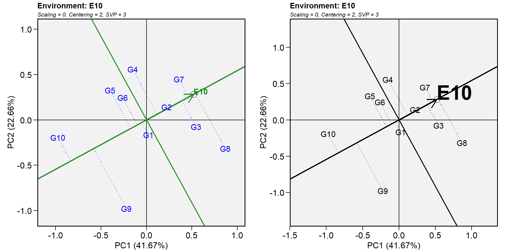
14.10.6.4 Biplot tipo 4: Discriminação vs. representatividade
p1 <-plot(gge_model, type = 4)
p2 <-plot(gge_model,
type = 4,
plot_theme = theme_gray())+
theme(legend.position = "bottom")
arrange_ggplot(p1, p2)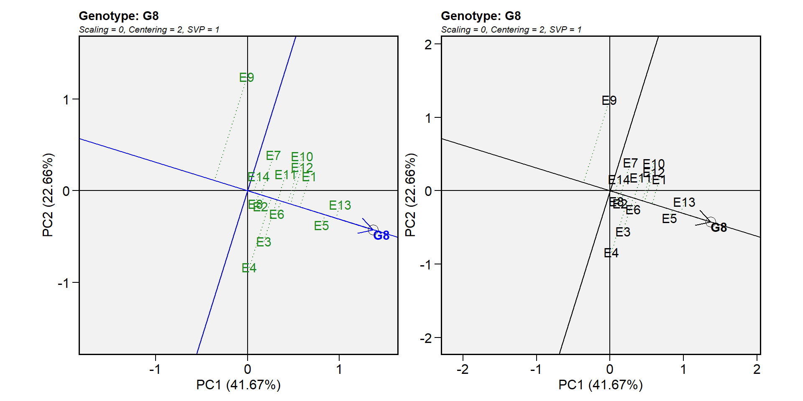
14.10.6.5 Biplot tipo 5: Examinar um ambiente
A identificação de genótipos mais adaptados a um ambiente pode ser facilmente alcançada utilizando o biplot GGE. Por exemplo, para visualizar o desempenho de diferentes genótipos em um dado ambiente, por exemplo, E10, simplesmente desenhe uma linha que passa pela origem biplot e o marcador do E10. Os genótipos podem ser classificados de acordo com suas projeções no eixo E10 com base em seu desempenho neste ambiente, na direção apontada pela seta. Em nosso exemplo, no E10, o genótipo de maior rendimento foi o genótipo G8 e o genótipo de menor rendimento foi G10. A ordem dos genótipos foi G8 > G7 > G3 > G2 > G4 > G1 > G6 > G5 > G9 > G10.
gge_model <-gge(data_ge, ENV, GEN, GY, svp = "symmetrical")
p1 <-plot(gge_model, type = 5, sel_env = "E10")
p2 <-plot(gge_model,
type = 5,
sel_env = "E10",
col.gen = "black",
col.env = "black",
size.text.env = 10,
axis_expand = 1.5)
arrange_ggplot(p1, p2)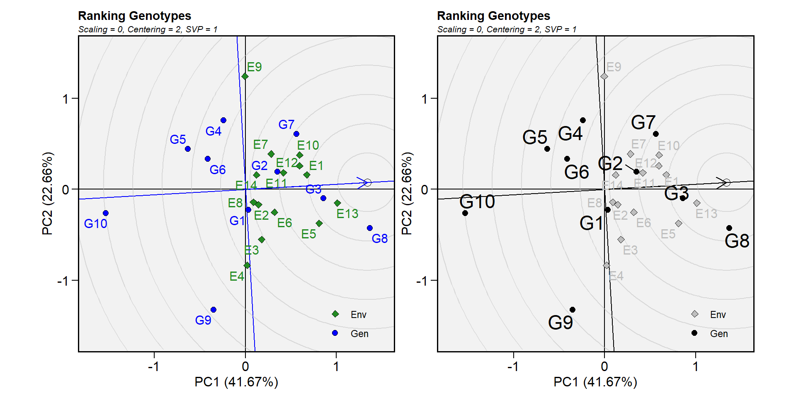
14.10.6.6 Biplot tipo 6: ranquear os ambientes
Neste biplot o ambiente “ideal” é usado como o centro de um conjunto de linhas concêntricas que servem para medir a distância entre um ambiente e o ambiente “ideal”. Como o foco principal neste biplot são os ambientes, a partição de valor singular usada é “ambiente” (padrão). Pode ser visto que E13 é o mais próximo do ambiente ideal e, portanto, é o mais desejável de todos os 14 ambientes. E4 e E9 foram os ambientes de teste menos desejados.
gge_model <- gge(data_ge, ENV, GEN, GY)
p1 <- plot(gge_model, type = 6)
p2 <- plot(gge_model,
type = 6,
col.gen = "black",
col.env = "black",
size.text.env = 10,
axis_expand = 1.5)
arrange_ggplot(p1, p2)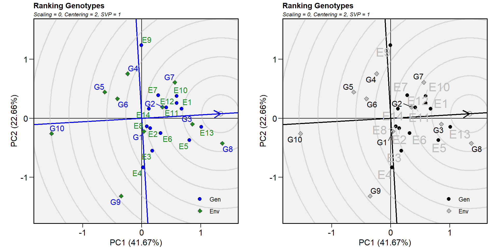
14.10.6.7 Biplot tipo 7: examinar um genótipo
Semelhante à visualização dos desempenhos genotípicos em um determinado ambiente (biplot 5), a visualização da média e da estabilidade dos genótipos é obtida desenhando-se uma AEC no biplot com foco no genótipo, ou row metric preserving (Yan et al. 2007).
gge_model <- gge(data_ge, ENV, GEN, GY, svp = "genotype")
p1 <- plot(gge_model, type = 7, sel_gen = "G8")
p2 <- plot(gge_model,
type = 7,
sel_gen = "G8",
col.gen = "black",
col.env = "black",
size.text.env = 10,
axis_expand = 1.5)
arrange_ggplot(p1, p2)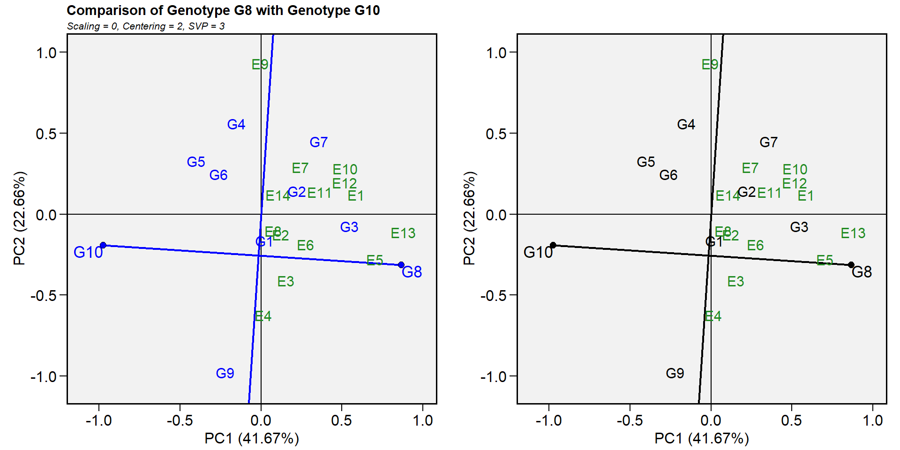
14.10.6.8 Biplot tipo 8: ranquear os genótipos
Este biplot compara todos os genótipos com o genótipo “ideal”. O genótipo ideal, representado pelo pequeno círculo com uma seta apontando para ele, é definido como tendo o maior rendimento em todos os ambientes. Ou seja, tem o maior rendimento médio e é absolutamente estável. Os genótipos são classificados com base em sua distância do genótipo ideal (Yan et al. 2007). Em nosso exemplo, o G3 e o G8 superaram os outros genótipos.
gge_model <- gge(data_ge, ENV, GEN, GY, svp = "genotype")
p1 <- plot(gge_model, type = 8)
p2 <- plot(gge_model,
type = 8,
col.gen = "black",
col.env = "gray",
size.text.gen = 6)
arrange_ggplot(p1, p2)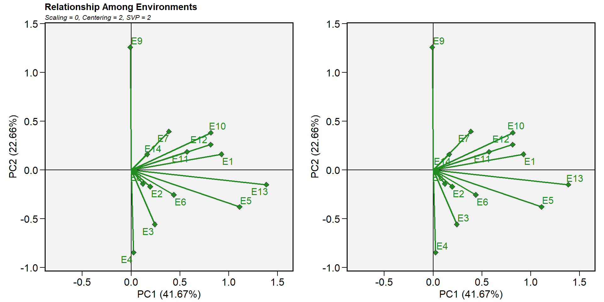
14.10.6.9 Biplot tipo 9: comparar dois genótipos
Para comparar dois genótipos, por exemplo, G10 e G8, desenhe uma linha de conexão para conectá-los e trace uma linha perpendicular que passa pela origem do biplot e é perpendicular à linha de conexão. Vemos que um ambiente, E9, está do mesmo lado da linha perpendicular do G10, e os outros 13 ambientes estão do outro lado da linha perpendicular, junto com o G8. Isso indica que G10 produziu mais do que o G8 no E9, mas G8 produziu mais que o G10 nos outros 13 ambientes (Yan et al. 2007).
gge_model <- gge(data_ge, ENV, GEN, GY, svp = "symmetrical")
p1 <- plot(gge_model, type = 9, sel_gen1 = "G8", sel_gen2 = "G10")
p2 <- plot(gge_model,
type = 9,
sel_gen1 = "G8",
sel_gen2 = "G10",
col.gen = "black",
title = FALSE,
annotation = FALSE)
arrange_ggplot(p1, p2)
14.11 Modelos mistos na avaliação de MET
Assumindo \(\mathop\alpha\nolimits_i\) e \(\mathop {(\alpha \tau )}\nolimits_{ij}\) como sendo de efeitos aleatórios, o modelo em pode ser convenientemente reescrito utilizando o seguinte modelo linear misto: \[ \label{meq} {\boldsymbol{y = X\beta + Zu + \varepsilon }} \]
onde y é um vetor \(n[ = \sum\nolimits_{j = 1}^e {(gb)]} \times 1\), \({\boldsymbol{y}} = {\rm{ }}{\left[ {{y_{111}},{\rm{ }}{y_{112}},{\rm{ }} \ldots ,{\rm{ }}{y_{geb}}} \right]^\prime }\); \(\boldsymbol{\beta}\) é um vetor \(eb \times 1\) de efeitos fixos, \({\boldsymbol{\beta }} = [\mathop \gamma \nolimits_{11} ,\mathop \gamma \nolimits_{12} ,...,\mathop \gamma \nolimits_{eb} ]'\); u é um vetor \(m[ = g + ge] \times 1\) de efeitos aleatórios, \({\boldsymbol{u}} = {\rm{ }}{\left[ {{\alpha _1},{\alpha _2},...,{\alpha _g},\mathop {(\alpha \tau )}\nolimits_{11} ,\mathop {(\alpha \tau )}\nolimits_{12} ,...,\mathop {(\alpha \tau )}\nolimits_{ge} } \right]^\prime }\); X é uma matriz delineamento de dimensão \(n \times eb\) relacionando y a \({\boldsymbol{\beta }}\); Z é uma matriz delineamento de dimensão \(m\times n\) relacionando y a \(\boldsymbol{u}\); e \({\boldsymbol{\varepsilon }}\) é um vetor n×1 de erros aleatórios, \({\boldsymbol{\varepsilon }} = {\rm{ }}{\left[ {{y_{111}},{\rm{ }}{y_{112}},{\rm{ }} \ldots ,{\rm{ }}{y_{geb}}} \right]^\prime }\)
Os vetores aleatórios \({\boldsymbol{\beta }}\) e \(\boldsymbol{u}\) são assumidos como normais e independentemente distribuídos com média zero e matrizes de variância-covariância G e R, respectivamente, de tal forma que
\[ \left[ \begin{array}{l}{\boldsymbol{u}}\\{\boldsymbol{\varepsilon }}\end{array} \right]\sim N\left( {\left[ \begin{array}{l}{\boldsymbol{0}}\\{\boldsymbol{0}}\end{array} \right]{\boldsymbol{,}}\left[ {\begin{array}{*{20}{c}}{\boldsymbol{G}}&{\boldsymbol{0}}\\{\boldsymbol{0}}&{\boldsymbol{R}}\end{array}} \right]} \right) \]
A matriz de variância-covariância G tem muitas formas possíveis. A estrutura mais simples -e a opção padrão na maioria dos pacotes estatísticos para modelos mistos- são os componentes de variância, de modo que
\[ {\boldsymbol{G}} = \left[ {\begin{array}{*{20}{c}}{\mathop {\hat \sigma }\nolimits_\alpha ^2 {{\boldsymbol{I}}_g}}&0\\0&{\mathop {\hat \sigma }\nolimits_{\alpha \tau }^2 {{\boldsymbol{I}}_{ge}}}\end{array}} \right] \]
e \({\boldsymbol{R}} = \mathop {\hat \sigma }\nolimits_\varepsilon ^2 {{\boldsymbol{I}}_n}\), sendo \(\mathop {\hat \sigma }\nolimits_\alpha ^2\), \(\mathop {\hat \sigma }\nolimits_{\alpha \tau }^2\) e \(\mathop {\hat \sigma }\nolimits_\varepsilon ^2\) as variâncias para genótipo, interação genótipo-ambiente e erros aleatórios, respectivamente.
Os vetores \({\boldsymbol{\beta }}\) e \(\boldsymbol{u}\) são estimados considerando a bem conhecida equação de modelo misto Henderson (1975).
\[ \label{ad} \left[ {\begin{array}{*{20}{c}}{{\boldsymbol{\hat \beta }}}\\{{\boldsymbol{\hat u}}}\end{array}} \right]{\boldsymbol{ = }}{\left[ {\begin{array}{*{20}{c}}{{\boldsymbol{X'}}{{\boldsymbol{R}}^{ - {\boldsymbol{1}}}}{\boldsymbol{X}}}&{{\boldsymbol{X'}}{{\boldsymbol{R}}^{ - {\boldsymbol{1}}}}{\boldsymbol{Z}}}\\{{\boldsymbol{Z'}}{{\boldsymbol{R}}^{ - {\boldsymbol{1}}}}{\boldsymbol{X}}}&{{\boldsymbol{Z'}}{{\boldsymbol{R}}^{ - {\boldsymbol{1}}}}{\boldsymbol{Z + }}{{\boldsymbol{G}}^{ - {\boldsymbol{1}}}}}\end{array}} \right]^ - }\left[ {\begin{array}{*{20}{c}}{{\boldsymbol{X'}}{{\boldsymbol{R}}^{ - {\boldsymbol{1}}}}{\boldsymbol{y}}}\\{{\boldsymbol{Z'}}{{\boldsymbol{R}}^{ - {\boldsymbol{1}}}}{\boldsymbol{y}}}\end{array}} \right] \]
Onde o sobescrito \(^{-1}\) e \(^-\) representam as inversas e inversas generalizadas das matrizes, respectivamente. A estimativa dos componentes de variância em \({\boldsymbol{\hat G}}\) e \({\boldsymbol{\hat R}}\), pode ser realizada sem maiores problemas utilizando ANOVA convencional quando os dados são balanceados. Quando este pressuposto não é cumprido, a estimativa baseada em Restricted Maximum Likelihood (REML) utilizando o algoritmo Expectation-Maximization (Dempster, Laird, and Rubin 1977) é a mais indicada.
Desde a década de 1990, os modelos mistos vêm ganhando cada vez mais espaço na avaliação de MET, pois permitem a estimativa de parâmetros genéticos e ambientais, bem como a predição dos valores genotípicos de forma não-viciada (Smith, Cullis, and Thompson 2005). Da mesma forma, modelos mistos reduzem os ruídos de análises realizadas com dados desbalanceados e também de variáveis que não assumem aditividade, características frequentemente observadas em MET (Hu 2015). Na avaliação dos dados oriundos de MET é de interesse do pesquisador predizer o “verdadeiro” rendimento \(w_{ij}\) dado os rendimentos observados \(y_{ij}\). Quando um fator é considerado fixo, as inferências são limitadas apenas aos níveis testados deste fator e os efeitos são estimados por Best Linear Unbiased Estimator, ou BLUE . Para efeitos aleatórios, onde deseja-se expandir as inferências para uma população de tratamentos (ou ambientes), a predição é realizada por Best Linear Unbiased Predictor, ou BLUP (Henderson 1975). Eq.
14.11.1 Ajustando o modelo
A função waasb() do pacote metan será utilizada para a análise dos dados de nosso exemplo utilizando o modelo misto descrito acima, considerando como aleatório os efeitos de genótipo e da interação genótipo-vs-ambiente.
A função get_model_data() pode ser utilizada para extrair importantes informações do modelo ajustado com a função waasb().
- Resumo do experimento
# A tibble: 14 x 3
Parameters GY HM
<chr> <chr> <chr>
1 Nenv "14" "14"
2 Ngen "10" "10"
3 mresp "100" "100"
4 wresp "50" "50"
5 Mean "2.67" "48.09"
6 SE "0.05" "0.21"
7 SD "0.92" "4.37"
8 CV "34.56" "9.09"
9 Min "0.67 (G10 in E11)" "38 (G2 in E14)"
10 Max "5.09 (G8 in E5)" "58 (G8 in E11)"
11 MinENV "E11 (1.37)" "E14 (41.03)"
12 MaxENV "E3 (4.06)" "E11 (54.2)"
13 MinGEN "G10 (2.47) " "G2 (46.66) "
14 MaxGEN "G8 (3) " "G5 (49.3) " - Teste de razão de máxima verossimilhanças (LRT)
# A tibble: 3 x 3
model GY HM
<chr> <dbl> <dbl>
1 COMPLETE NA NA
2 GEN 19.3 7.86
3 GEN:ENV 44.8 62.8 # A tibble: 3 x 3
model GY HM
<chr> <dbl> <dbl>
1 COMPLETE NA NA
2 GEN 1.11e- 5 5.07e- 3
3 GEN:ENV 2.15e-11 2.27e-15O teste LRT indicou diferenças significativas para os efeitos aleatórios de genótipo e interação genótipo-vs-ambiente. Assim, a utilização de modelos mistos é indicada para predição do rendimento em nosso exemplo.
- Componentes da variância
# A tibble: 3 x 3
Group GY HM
<chr> <dbl> <dbl>
1 GEN 0.0280 0.490
2 GEN:ENV 0.0567 2.19
3 Residual 0.0967 2.84 14.11.2 Análise dos resíduos
A função autoplot() também pode ser utilizada para a investigação dos pressupostos do modelo neste exemplo. Dois gráficos que são gerados mas não mostrados por padrão são vistos neste exemplo.
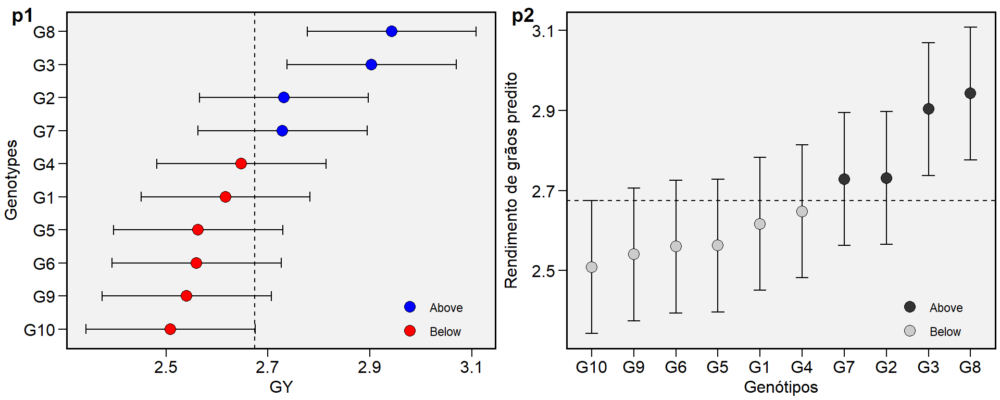
14.11.3 Parâmetros genéticos
Class of the model: waasbVariable extracted: genpar# A tibble: 9 x 3
Parameters GY HM
<chr> <dbl> <dbl>
1 Phenotypic variance 0.181 5.52
2 Heritability 0.154 0.0888
3 GEIr2 0.313 0.397
4 Heribatility of means 0.815 0.686
5 Accuracy 0.903 0.828
6 rge 0.370 0.435
7 CVg 6.26 1.46
8 CVr 11.6 3.50
9 CV ratio 0.538 0.415 Além dos componentes de variância para os efeitos aleatórios declarados, alguns importantes parâmetros genéticos são mostrados. Heribatility é a herdabilidade no sentido amplo (\(\mathop h\nolimits_g^2\)) estimada por \(\mathop h\nolimits_g^2 = \mathop \sigma \nolimits_g^2 /\left( {\mathop \sigma \nolimits_g^2 + \mathop \sigma \nolimits_i^2 + \mathop \sigma \nolimits_e^2 } \right)\) onde \((\mathop \sigma \nolimits_g^2 )\) é a variância genotípica; \((\mathop \sigma \nolimits_i^2 )\) é a variância da interação GE; e \((\mathop \sigma \nolimits_e^2 )\) é a variância residual. GEIr2 é o coeficiente de determinação do efeito da interação GE (\(\mathop r\nolimits_i^2\) ) estimado por \(\mathop r\nolimits_i^2 = \mathop \sigma \nolimits_i^2 /\left( {\mathop \sigma \nolimits_g^2 + \mathop \sigma \nolimits_i^2 + \mathop \sigma \nolimits_e^2 } \right)\); Heribatility of means é a herdabilidade da média assumindo ausência de valores perdidos \((\mathop h\nolimits_{gm}^2 )\), estimada por \(\mathop h\nolimits_{gm}^2 = \mathop \sigma \nolimits_g^2 /\left[ {\mathop \sigma \nolimits_g^2 + \mathop \sigma \nolimits_i^2 /a + \mathop \sigma \nolimits_e^2 /\left( {ab} \right)} \right]\), onde a e b são o número de ambientes e blocos, respectivamente; Accuracy é a acurácia de seleção (Ac), estimada por \(Ac = \sqrt{\mathop h\nolimits_{gm}^2}\) ; rge é a correlação genótipo-ambiente \((\mathop r\nolimits_{ge})\) estimada por \(\mathop r\nolimits_{ge} = \mathop \sigma \nolimits_g^2 /\left({\mathop \sigma \nolimits_g^2 + \mathop \sigma \nolimits_i^2} \right)\); CVg é o coeficiente de variação genotípico, estimado por \({\left({\mathop \sigma \nolimits_g^2 /\mu } \right)^{0.5}} \times 100\), onde \(\mu\) é a média geral; CVr é o coeficiente de variação residual, estimado por \({\left( {\mathop \sigma \nolimits_e^2 /\mu} \right)^{0.5}} \times 100\) ; CV ratio é a razão entre o coeficiente de variação genotípico e residual.
14.11.4 Médias preditas
- Imprimindo os BLUPs preditos para genótipos
NULLblupGEN mostra a média predita para os genótipos testados. BLUPg é o efeito genotípico \((\hat{g}_{i})\) estimado por \(\hat{g}_{i} = h_g^2(\bar{y}_{i.}-\bar{y}_{..})\) onde \(h_g^2\) é o efeito shrinkage para genótipo, estimado por \(\mathop h\nolimits_g^2 = (\mathop {\hat \sigma }\nolimits_i^2 + E\mathop {\hat \sigma }\nolimits_g^2 )/(\mathop {\hat \sigma }\nolimits_i^2 + \mathop {\hat \sigma }\nolimits_\varepsilon ^2 + E\mathop {\hat \sigma }\nolimits_g^2 ).\). Predicted é a média predita por \(\hat{g}_{i}+\mu\) onde \(\mu\) é a média geral. LL e UL são os limites inferiore e superior, respectivamente estimado por \((\hat{g}_{i}+\mu)\pm{CI}\). \(CI\) é o intervalo de confiança para predição BLUP, assumindo uma dada probabilidade de erro, onde \(CI = t\times\sqrt{((1-Ac)\times{\mathop \sigma \nolimits_g^2)}}\) onde \(t\) é o valor t-Student para um teste bilateral a uma dada probabilidade de erro; \(Ac\) é a acurácia de seleçao; e \(\mathop \sigma \nolimits_g^2\) é a variância genotípica.
- plotando os BLUPs preditos para genótipos
p1 <-plot_blup(BLUP_model)
p2 <-plot_blup(BLUP_model,
col.shape = c("gray20", "gray80"),
y.lab = "Genótipos",
x.lab = "Rendimento de grãos predito") + coord_flip()
arrange_ggplot(p1, p2, labels = c("p1", "p2"))Figure 14.4: Médias preditas para genótipos considerando um modelo misto
- Imprimindo os BLUPs estimados para as combinações genótipo x ambiente (primeiras 10 entradas)
NULLA saída acima os BLUPs estimados para as combinações genótipo x ambiente. BLUPg é o efeito genotípico, descrito acima; BLUPge é o efeito genotípico do genótipo i no ambiente j \((\hat{g}_{ij})\) estimado por \(\hat{g}_{ij} = h_g^2(\bar{y}_{i.}-\bar{y}_{..})+h_{ge}^2(y_{ij}-\bar{y}_{i.}-\bar{y}_{.j}+\bar{y}_{..})\), onde \(h_{ge}^2\) é o efeito shrinkage para a interação GE, estimado por \(\mathop h\nolimits_{ge}^2 = \mathop {\hat \sigma }\nolimits_i^2 /(\mathop {\hat \sigma }\nolimits_i^2 + \mathop {\hat \sigma }\nolimits_\varepsilon ^2)\); BLUPg+ge é \(BLUP_g+BLUP_{ge}\); Predicted é a média predita (\(\hat{y}_{ij}\)) estimada por \(\hat{y}_{ij} = \bar{y}_{.j}+BLUP_{g+ge}\).
Para obter os valores acima para cada variável do modelo basta utilizar a função get_model_data(), por exemplo:
* get_model_data(BLUP_model, "blupg") para as médias preditas de genótipos;
* get_model_data(BLUP_model, "blupge") para as médias preditas de genótipos em ambientes;
14.11.5 Índices de estabilidade baseados em BLUP
14.11.5.1 O índice WAASB
Recentemente, (T. Olivoto, Lúcio, Da silva, Marchioro, et al. 2019) propuseram um índice de estabilidade, WAASB (Weighted Average of Absolute Scores), que combina as características do modelo AMMI e BLUP. O índice é baseado na média ponderada dos escores absolutos obtidos pela decomposição por valores singulares da matriz BLUP dos efeitos da interação em um modelo de efeito misto, conforme a seguite equação.
\[ WAASB_i = \sum_{k = 1}^{p} |IPCA_{ik} \times EP_k|/ \sum_{k = 1}^{p}EP_k \]
onde \(WAASB_i\) é a média ponderada dos escores absolutos do genótipo i; \(IPCA_{ik}\) é o escore do genótipo i no k-esimo IPCA; e \(EP_k\) é a variância explicada pelo k IPCA para \(k = 1,2, .., p\), sendo \(p = min (g-1; e-1)\). O genótipo mais estável é aquele com o menor valor de WAASB (T. Olivoto, Lúcio, Da silva, Marchioro, et al. 2019).
Devido a aplicação da ténica de decomposição por valores singulares, é possível a confecção de biplots semelhantes ao método AMMI, considerando agora, um modelo de efeito misto. Para isto, a função plot_scores é utilizada utilizando como argumento de o modelo ajustado BLUP_model. T. Olivoto, Lúcio, Da silva, Marchioro, et al. (2019) e T. Olivoto, Lúcio, Da silva, Sari, et al. (2019) propuseram a utilização do índice WAASB na ordenada do biplot AMMI1, substituindo os valores do IPCA1 pelos valores do WAASB. Este biplot é criado utilizando type = 3 na função.
p5 = plot_scores(BLUP_model, type = 3)
p6 = plot_scores(BLUP_model, type = 3) +
theme_gray() +
theme(legend.position = c(0.1, 0.9),
legend.background = element_rect(fill = NA))
arrange_ggplot(p5, p6, labels = c("p5","p6"))Figure 14.5: Biplot AMMI2 gerado pelo pacote metan
Os quadrantes propostos nesta interpretação representam as quatro classificações propostas por T. Olivoto, Lúcio, Da silva, Marchioro, et al. (2019) em relação à interpretação conjunta da produtividade e estabilidade. Os genótipos ou ambientes incluídos no quadrante I podem ser considerados genótipos instáveis –ou ambientes com alta capacidade de discriminação, mas com produtividade abaixo da média geral. No quadrante II estão incluídos os genótipos instáveis, embora com produtividade acima da média geral. Os ambientes incluídos neste quadrante merecem atenção especial, pois, além de fornecerem altas magnitudes da variável resposta, apresentam boa capacidade de discriminação. Os genótipos dentro do quadrante III têm baixa produtividade, mas podem ser considerados estáveis devido aos valores mais baixos do WAASB. Quanto menor esse valor, mais estável o genótipo pode ser considerado. Os ambientes incluídos neste quadrante podem ser considerados pouco produtivos e com baixa capacidade de discriminação. Os genótipos dentro do quadrante IV são altamente produtivos e estáveis.
14.11.5.2 O índice WAASBY
Um novo índice de superioridade que considera tanto a estabilidade quanto a produtividade para a classificação dos genótipos também foi proposto por T. Olivoto, Lúcio, Da silva, Marchioro, et al. (2019), considerando a seguinte equação.
\[ WAASB{Y_i} = \frac{{\left( {r{G_i} \times {\theta _Y}} \right) + \left( {r{W_i} \times {\theta _S}} \right)}}{{{\theta _Y} + {\theta _S}}} \]
onde \(WAASBY_i\) é o índice de superioridade para o genótipo i que pondera entre desempenho e estabilidade; \(rG_i\) e \(rW_i\) são os valores escalonados (0-100) para GY e WAASB, respectivamente; \(\theta_Y\) e \(\theta_S\) são os pesos para GY e WAASB, respectivamente.
Este índice permite atribuir pesos para estabilidade e produtividade na classificação dos genótipos. Para isto, o argumento wresp da função waasb() é usado. Por exemplo, se o objetivo é selecionar genótipos com alto rendimento (independentemente de sua estabilidade), então o wresp = 100 deve ser usado. Nesse caso, a classificação do índice WAASBY corresponderá perfeitamente à classificação da variável de resposta. Por outro lado, visando selecionar genótipos altamente estáveis (independentemente da produtividade), então o wresp = 0 deve ser usado. Nesse caso, a classificação do índice WAASBY corresponderá perfeitamente à classificação do índice WAASB. Qualquer valor entre 0 e 100 pode ser usado no argumento wresp para ponderar entre o desempenho médio e a estabilidade. Em nosso exemplo, o índice WAASBY foi calculado considerando wresp = 50 (padrão da função), o que significa pesos iguais para desempenho e estabilidade médios. Para plotar os valores de WAASBY, o código a seguir é usado.
p1 <-plot_waasby(BLUP_model)
p2 <-plot_waasby(BLUP_model,
col.shape = c("black", "gray")) +
coord_flip()O reescalonamento da variável resposta e do índice WAASB é necessário para que eles sejam diretamente comparáveis. Por padrão, a variável resposta é reescalonada de forma que o valor máximo (genótipo com a maior média) seja 100 e o valor mínimo (genótipo com a menor média) seja 0. Digamos que para uma determinada variável, menores valores são desejados, então o argumento mresp = 100 (padrão) deve ser ajustado para mresp = 0.
Par obter o índice WAASBY para múltiplas variáveis, por exemplo, basta utilizar a função get_model_data(), como mostrado abaixo.
waas(data_ge2, ENV, GEN, REP,
resp = c(PH, ED, TKW, NKR),
wresp = rep(65, 4)) %>%
get_model_data(what = "WAASY")variable PH
---------------------------------------------------------------------------
AMMI analysis table
---------------------------------------------------------------------------
Source Df Sum Sq Mean Sq F value Pr(>F) Percent Accumul
ENV 3 7.719 2.5728 127.913 4.25e-07 . .
REP(ENV) 8 0.161 0.0201 0.897 5.22e-01 . .
GEN 12 1.865 0.1554 6.929 6.89e-09 . .
GEN:ENV 36 5.397 0.1499 6.686 5.01e-14 . .
PC1 14 4.466 0.3190 14.230 0.00e+00 82.8 82.8
PC2 12 0.653 0.0545 2.430 8.40e-03 12.1 94.9
PC3 10 0.277 0.0277 1.240 2.76e-01 5.1 100
Residuals 96 2.153 0.0224 NA NA . .
Total 155 17.294 0.1116 NA NA <NA> <NA>
---------------------------------------------------------------------------
variable ED
---------------------------------------------------------------------------
AMMI analysis table
---------------------------------------------------------------------------
Source Df Sum Sq Mean Sq F value Pr(>F) Percent Accumul
ENV 3 306.0 101.99 43.386 2.70e-05 . .
REP(ENV) 8 18.8 2.35 0.906 5.15e-01 . .
GEN 12 212.9 17.74 6.838 8.95e-09 . .
GEN:ENV 36 398.2 11.06 4.263 7.60e-09 . .
PC1 14 212.2 15.16 5.840 0.00e+00 53.3 53.3
PC2 12 134.7 11.23 4.330 0.00e+00 33.8 87.1
PC3 10 51.3 5.13 1.980 4.38e-02 12.9 100
Residuals 96 249.1 2.59 NA NA . .
Total 155 1185.0 7.64 NA NA <NA> <NA>
---------------------------------------------------------------------------
variable TKW
---------------------------------------------------------------------------
AMMI analysis table
---------------------------------------------------------------------------
Source Df Sum Sq Mean Sq F value Pr(>F) Percent Accumul
ENV 3 37013 12338 11.13 3.16e-03 . .
REP(ENV) 8 8869 1109 1.21 3.03e-01 . .
GEN 12 44633 3719 4.05 4.41e-05 . .
GEN:ENV 36 164572 4571 4.98 1.73e-10 . .
PC1 14 104276 7448 8.11 0.00e+00 63.4 63.4
PC2 12 33361 2780 3.03 1.20e-03 20.3 83.6
PC3 10 26935 2694 2.93 3.00e-03 16.4 100
Residuals 96 88171 918 NA NA . .
Total 155 343257 2215 NA NA <NA> <NA>
---------------------------------------------------------------------------
variable NKR
---------------------------------------------------------------------------
AMMI analysis table
---------------------------------------------------------------------------
Source Df Sum Sq Mean Sq F value Pr(>F) Percent Accumul
ENV 3 237.0 79.01 15.843 0.000997 . .
REP(ENV) 8 39.9 4.99 0.635 0.746348 . .
GEN 12 227.8 18.99 2.418 0.008726 . .
GEN:ENV 36 602.7 16.74 2.132 0.001839 . .
PC1 14 337.4 24.10 3.070 0.000600 56 56
PC2 12 192.2 16.02 2.040 0.028500 31.9 87.9
PC3 10 73.1 7.31 0.930 0.509500 12.1 100
Residuals 96 753.7 7.85 NA NA . .
Total 155 1861.1 12.01 NA NA <NA> <NA>
---------------------------------------------------------------------------
All variables with significant (p < 0.05) genotype-vs-environment interaction
Done!Class of the model: waasVariable extracted: WAASY# A tibble: 13 x 5
gen PH ED TKW NKR
<fct> <dbl> <dbl> <dbl> <dbl>
1 H1 73.6 78.1 84.5 42.7
2 H10 22.0 18.8 34.8 56.3
3 H11 42.5 39.2 56.6 56.3
4 H12 27.5 51.5 41.0 35
5 H13 49.2 60.2 70.7 25.1
6 H2 66.3 54.9 62.5 51.6
7 H3 59.4 57.9 52.1 48.5
8 H4 68.6 59.4 59.8 98.7
9 H5 85.3 61.6 69.9 75.2
10 H6 67.5 95.7 90.3 34.5
11 H7 41.4 62.8 55.8 42.6
12 H8 11.6 32.2 17.3 29.2
13 H9 45.5 7.93 0 48.414.11.5.3 Diferentes cenários para a estimativa do WAASBY
No exemplo a seguir, aplicaremos a função wsmp() (weighting the stability and the mean performance) ao modelo previamente ajustado BLUP_model visando planejar diferentes cenários de estimação do WAASBY alterando os pesos atribuídos à estabilidade e ao desempenho médio. O número de cenários é definido pelo argumento increment. Por padrão, vinte e um cenários diferentes são simulados. Neste caso, o índice de superioridade WAASBY é calculado considerando os seguintes pesos: estabilidade = 100; desempenho médio = 0. Em outras palavras, apenas a estabilidade é considerada para a classificação dos genótipos. Na próxima iteração, os pesos se tornam 95/5 (uma vez que increment = 5). No terceiro cenário, os pesos se tornam 90/10, e assim por diante até esses pesos se tornarem 0/100. Na última iteração, a classificação do genótipo para o WAASBY corresponde perfeitamente às classificações da variável resposta.
A função genérica plot() é então usada para plotar o objeto. Dois heatmaps são criados. O primeiro tipo mostra a classificação do genótipo dependendo do número de eixos de componentes principais usados para estimar o índice WAASB. Um dendrograma baseado na distância euclidiana é usado para agrupar a classificação dos genótipos. O segundo tipo mostra a classificação do genótipo dependendo da relação WAASB/GY. As classificações obtidas no cenário 100/0 consideram exclusivamente a estabilidade para o ranking de genótipos. Por outro lado, o cenário 0/100 considera exclusivamente a produtividade para o ranking de genótipos.
14.11.5.4 Performance e média harmônica dos valores genotípicos
A função Resende_indexes() computa os índices Média Harmônica dos Valores Genotípicos (MHVG), Performance Relativa dos Valores Genotípicos (PRVG) e Média Harmônica da Performance Relativa dos Valores Genotipicos (MHPRVG), conforme descrito em Colombari Filho et al. (2013). Estes índices são calculados para cada genótipo de acordo com as seguintes equações.
\[ MHVG_i = \frac{1}{e}\sum\limits_{j = 1}^e {\frac{1}{{G{v_{ij}}}}} \]
\[ PRVG_i = \frac{1}{e}\sum\limits_{j = 1}^e {G{v_{ij}}/{\mu_j}} \]
\[ MHPRVG_i = \frac{1}{e}\sum\limits_{j = 1}^e {\frac{1}{{G{v_{ij}}/{\mu_j}}}} \]
onde e é o número de ambientes incluídos na análise, \(Gv_{ij}\) é o valor genotípico (BLUP) para o genótipo i no ambiente j.
# A tibble: 10 x 10
GEN Y HMGV HMGV_R RPGV RPGV_Y RPGV_R HMRPGV HMRPGV_Y HMRPGV_R
<fct> <dbl> <dbl> <dbl> <dbl> <dbl> <dbl> <dbl> <dbl> <dbl>
1 G1 2.60 2.32 6 0.969 2.59 6 0.967 2.59 6
2 G10 2.47 2.11 10 0.913 2.44 10 0.896 2.40 10
3 G2 2.74 2.47 4 1.03 2.74 4 1.02 2.73 4
4 G3 2.96 2.68 2 1.11 2.96 2 1.10 2.95 2
5 G4 2.64 2.39 5 0.990 2.65 5 0.988 2.64 5
6 G5 2.54 2.30 8 0.954 2.55 7 0.952 2.55 8
7 G6 2.53 2.30 7 0.954 2.55 8 0.952 2.55 7
8 G7 2.74 2.52 3 1.04 2.77 3 1.03 2.76 3
9 G8 3.00 2.74 1 1.13 3.01 1 1.12 3.00 1
10 G9 2.51 2.18 9 0.926 2.48 9 0.917 2.45 914.12 AMMI ou BLUP? Decisão em cada caso!
Vimos anteriormente que um membro da família de modelos AMMI (AMMI2) é o mais preciso na predição da variável resposta em nosso exemplo. Após analizar-mos os mesmos dados utilizando modelos mistos, nos surge a seguinte questão. Qual é o método mais preciso para predizer a variável resposta em nosso exemplo? A resposta a esta pergunda será dada agora. O pacote metan também conta com uma função para cross-validation considerando o modelo misto acima. A idéia é simples. Relizaremos uma validação cruzada semelhante àquela realizada no modelo AMMI e compararemos o RMSPD dos valores preditos utilizando BLUP com aqueles obtidos pelo modelo AMMI.
A função cv_blup() realiza uma validação cruzada para experimentos com repetição usando modelos mistos. Por padrão, blocos completos são selecionados aleatoriamente em cada ambiente. O procedimento para calcular o RMSPD é idêntico ao apresentado na análise AMMI.
Para unir os resultados obtidos pelas funções cv_ammif() e cv_blup() a função bind_cv(). Usando o argumento bind = "means" é possível concatenar os valores médios obtidos por cada modelo.
# A tibble: 11 x 6
MODEL mean sd se Q2.5 Q97.5
<fct> <dbl> <dbl> <dbl> <dbl> <dbl>
1 BLUP_g_RCBD 0.398 0.0226 0.00506 0.368 0.440
2 AMMI2 0.411 0.0242 0.00171 0.369 0.460
3 AMMI4 0.416 0.0234 0.00166 0.373 0.462
4 AMMI3 0.416 0.0215 0.00152 0.377 0.457
5 AMMI5 0.422 0.0232 0.00164 0.377 0.464
6 AMMI6 0.422 0.0219 0.00155 0.381 0.462
7 AMMI7 0.425 0.0199 0.00141 0.381 0.458
8 AMMI8 0.427 0.0204 0.00145 0.387 0.462
9 AMMIF 0.429 0.0213 0.00150 0.390 0.469
10 AMMI1 0.430 0.0251 0.00178 0.384 0.479
11 AMMI0 0.430 0.0283 0.00200 0.370 0.485Um gráfico boxplot também pode ser obtido utilizando o argumento bind = "boot" (padrão).
val_plot <- bind_cv(AMMIF, valida_blup)
p1 <-plot(val_plot)
p2 <-plot(val_plot,
width.boxplot = 0.6,
col.boxplot = "cyan")
arrange_ggplot(p1, p2)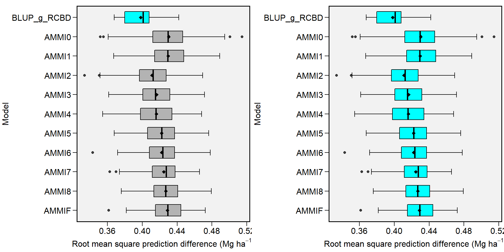
References
Annicchiarico, P. 1992. “Cultivar adaptation and recommendation from alfalfa trials in Northern Italy.” Journal of Genetics and Breeding 46: 269–78.
Colombari Filho, J. M., M. D. V. Resende, O. P. Morais, A. P. Castro, É. P. Guimarães, J. A. Pereira, M. M. Utumi, and F. Breseghello. 2013. “Upland rice breeding in Brazil: a simultaneous genotypic evaluation of stability, adaptability and grain yield.” Euphytica 192 (1): 117–29. https://doi.org/10.1007/s10681-013-0922-2.
Dempster, A. P., N. M. Laird, and D. B. Rubin. 1977. “Maximum likelihood from incomplete data via the EM algorithm.” Journal of the Royal Statistical Society, Series B 39 (1): 1–38. http://citeseer.ist.psu.edu/viewdoc/summary?doi=10.1.1.133.4884.
Eberhart, S. A., and W. A. Russell. 1966. “Stability parameters for comparing Varieties.” Crop Science 6 (1): 36–40. https://doi.org/10.2135/cropsci1966.0011183X000600010011x.
Farshadfar, E. 2008. “Incorporation of AMMI stability value and grain yield in a single non-parametric index (GSI) in bread wheat.” Pakistan Journal of Biological Sciences 11 (14): 1791–6. http://www.ncbi.nlm.nih.gov/pubmed/18817218.
Gabriel, K. R. 1971. “The Biplot Graphic Display of Matrices with Application to Principal Component Analysis.” Biometrika 58 (3): 453–67. https://doi.org/10.2307/2334381.
Gauch, H. G. 1988. “Model Selection and Validation for Yield Trials with Interaction.” Biometrics 44 (3): 705–15. https://doi.org/10.2307/2531585.
Gollob, H. F. 1968. “A statistical model which combines features of factor analytic and analysis of variance techniques.” Psychometrika 33 (1): 73–115. https://doi.org/10.1007/BF02289676.
Henderson, C. 1975. “Best Linear Unbiased Estimation and Prediction under a Selection Model.” Biometrics 31 (2): 423–47. https://doi.org/10.2307/2529430.
Hu, X. 2015. “A comprehensive comparison between ANOVA and BLUP to valuate location-specific genotype effects for rape cultivar trials with random locations.” Field Crops Research 179: 144–49. https://doi.org/10.1016/j.fcr.2015.04.023.
Lin, C. S., and M. R. Binns. 1988. “A superiority measure of cultivar performance for cultivar x location data.” Canadian Journal of Plant Science 68 (1): 193–98. https://doi.org/10.4141/cjps88-018.
Murakami, D. M., and C. D. Cruz. 2004. “Proposal of methodologies for environment stratification and analysis of genotype adaptability.” Crop Breeding and Applied Biotechnology 4 (1): 7–11. http://www.sbmp.org.br/cbab/siscbab/uploads/c8128f42-aefe-cdf5.pdf.
Olivoto, T., A. D. C Lúcio, J. A. G. Da silva, V. S. Marchioro, V. Q. de Souza, and E. Jost. 2019. “Mean performance and stability in multi-environment trials I: Combining features of AMMI and BLUP techniques.” Agronomy Journal. https://doi.org/10.2134/agronj2019.03.0220.
Olivoto, T., A. D. C Lúcio, J. A. G. Da silva, B. G. Sari, and M. I. Diel. 2019. “Mean performance and stability in multi-environment trials II: Selection based on multiple traits.” Agronomy Journal. https://doi.org/10.2134/agronj2019.03.0221.
Purchase, J. L., H. Hatting, and C. S. van Deventer. 2000. “Genotype × environment interaction of winter wheat ( Triticum aestivum L.) in South Africa: II. Stability analysis of yield performance.” South African Journal of Plant and Soil 17 (3): 101–7. https://doi.org/10.1080/02571862.2000.10634878.
Smith, A. B., B. R. Cullis, and R. Thompson. 2005. “The analysis of crop cultivar breeding and evaluation trials: an overview of current mixed model approaches.” The Journal of Agricultural Science 143 (06): 449–62. https://doi.org/10.1017/S0021859605005587.
Sneller, C. H., L. Kilgore-Norquest, and D. Dombek. 1997. “Repeatability of Yield Stability Statistics in Soybean.” Crop Science 37 (2): 383–90. https://doi.org/10.2135/cropsci1997.0011183X003700020013x.
Yan, Weikai. 2002. “Singular-Value Partitioning in Biplot Analysis of Multienvironment Trial Data.” Agronomy Journal 94 (5): 990–96. https://doi.org/10.2134/agronj2002.0990.
Yan, Weikai., and Manjit S. Kang. 2003. GGE biplot analysis : a graphical tool for breeders, geneticists, and agronomists. CRC Press.
Yan, W., M. S. Kang, B. Ma, S. Woods, and P. L. Cornelius. 2007. “GGE Biplot vs. AMMI Analysis of Genotype-by-Environment Data.” Crop Science 47 (2): 641–53. https://doi.org/10.2135/cropsci2006.06.0374.
Zali, H., E. Farshadfar, S. H. Sabaghpour, and R. Karimizadeh. 2012. “Evaluation of genotype × environment interaction in chickpea using measures of stability from AMMI model.” Annals of Biological Research 3 (7): 3126–36. http://eprints.icrisat.ac.in/7173/.